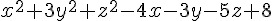
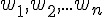

人工智慧 - 採用 JavaScript 實作
陳鍾誠
2014 年 8 月
序
人工智慧的書籍，往往理論眾多，看完之後卻完全不知道怎麼實作。為了彌補這個缺陷，我們採用實作導向的方式，來說明人工智慧的各種理論，希望透過這些程式，讓讀者對抽象的理論能夠有實際的感受。
陳鍾誠 2014/6/16 於 金門大學 資訊工程系
授權聲明
本課程內容由 金門大學 創建，期中部分內容與圖片來自 維基百科，因此採用 創作共用：姓名標示、相同方式分享 之授權。
若您想要修改本書產生衍生著作時，至少應該遵守下列授權條件：
- 標示原作者姓名為 陳鍾誠 衍生自 維基百科 的作品。
- 採用 創作共用：姓名標示、相同方式分享 的方式公開衍生著作。
人工智慧簡介
玄之又玄、眾妙之門 -- 老子 道德經
人工智慧 AI (Artificial Intelligence) 領域，可以說是資訊科學界的聖杯，或者說，更像是魔戒。這個令人想像就足以感到目眩神迷的領域，吸引了一代又一代的資訊科學研究者，不斷的投入這些令人望而生畏的問題當中。不知是因為勇氣還是利慾薰心，資訊科學研究者在此領域當中勇往直前，不斷失敗卻前仆後繼。許多人投入了一輩子，卻沒有得到想像中的成果，甚至連門口都沒進去，就已經陣亡了。人工智慧領域的理論已經成為一個龐然大物，想入門的人在看到這樣一個盤根錯節的碩大的身軀時，往往還沒到門口，就已經迷路了。而其他的人呢？則是在進了門之後，找不到出去的路。
「仰之彌高，鑽之彌堅，瞻之在前，忽焉在後」，這句被用來形容孔子的話，我覺得用來形容「人工智慧」會更為貼切一些。往往當研究者認為自己已經看到某些解答時，最後只發現了原來是一場夢。當問題看來如此的簡單之時，其實門內躲了一個妖精或怪獸，正虎視眈眈的看著你，他們打算先引你進來再吃掉你。在人工智慧領域迷路的人，通常不是被怪獸吃掉，而是被妖精用美色迷惑。最後，以為自己到了天堂，其實是精盡人亡後，下了地獄而不自知。如果你想看看這個妖精所在的世界，就請隨我而來吧。
研究 AI 的學者，或許更像金庸小說中俠客島上的江湖人物一樣，到了俠客島之後就被那些精妙的武功祕及所迷住了，再也不願意返回到原本的江湖中，畢生研究的武學也就毫無用處了。
俠客島上的人物，只看到秘笈中的文字，卻看不見文字筆勢上所蘊含的圖像式武學，因而錯失了真正精妙的武功之所在。或許，研究 AI 的學者也有同樣的問題，總是沉迷在各種看似高深的算法當中，卻又見樹不見林，以致於無法看見整體的智慧是如何形成的，這恐怕是 AI 領域的研究者未來所必須面對的挑戰。
在本書中，我們雖然會介紹 AI 的主要理論，但是卻希望讀者能回到現實上，以實作感受 AI 這些方法的意義，而不是只有理論闡述。即使如此，筆者目前仍然沒有任何能力，能告訴讀者如何才能拿到那個聖杯，或許這個聖杯根本就不存在也說不定。
何謂人工智慧 (AI) ?
終於到了我們為人工智慧下定義的時候了，我們認為，AI 的定義，與其用技術方式，不如用目標的方式定義更恰當。AI 的目標是企圖模擬人類，建構出具有類似人類大腦的程式。這包含使用眼睛、耳朵、嘴巴、手腳、身體等器官的能力。
因此，AI 的目標乃是模擬人類大腦，並利用電腦的眼睛 (攝影機)、耳朵 (麥克風)、嘴巴 (喇叭)、手腳與身體 (機器人)，取得外在世界的資訊，根據這些資訊進行類似人類的智慧型行為，像是影像辨識 (眼睛)、手寫辨識 (眼睛)、語音辨識 (耳朵)、機器人控制 (手腳與身體) 等，都是典型的 AI 領域。當然，還有許多與感官無關的領域，像是電腦下棋、自然語言理解、機器翻譯、知識工程等，這些都是與大腦的功能直接相關的領域，也是AI 領域當中的經典問題。
AI 是以電腦程式模擬人類的智慧行為，包含眼睛、耳朵等感官的「聽、說、讀、寫」，與大腦的「推理、理解、學習」，還有動作類的「手、腳、身體、控制」等行為。
| 模擬行為 | 相關應用 |
|---|---|
| 感知 | 語音辨識 (耳朵)、影像辨識 (眼睛)、手寫辯識(眼睛)、指紋辯識(眼睛) |
| 推理 | 專家系統、電腦遊戲、電腦下棋、醫療診斷 (大腦) |
| 理解 | 機器翻譯、交談系統 (大腦) |
| 學習 | 電腦下棋、專家系統、醫療診斷、辯識 (大腦) |
| 動作 | 機器人足球賽、自動駕駛、商用機器人、智慧型控制器 (手腳身體) |
AI 的方法
人工智慧的方法非常多樣，早期的人工智慧研究聚焦在邏輯推論的方法，後來越來越多元化，像是類神經網路、模糊推論、遺傳演算法、機率模型等都被包含進來。
邏輯推論的方法，由於需要百分之百確定的事實配合，因此在實務上不容易使用，因此像模糊推論等方法，雖然在理論上較不優美，但是在實務上卻很有用。類神經網路則是在影像辨識、語音辨識等領域，表現得較為傑出。
近來，機率式的方法開始越來越受到重視，像是 Hidden Markov Model (HMM)、Bayes Network、Monte Carlo Marko Chain (MCMC)、Expectation-Maximization (EM) 等方法，都有越來越多的應用。舉例而言，HMM 在語音辨識上具有非常好的辨識率、而 EM 學習演算法則在機器翻譯上被大量的使用。
由於機率式的方法在數學理論上較為完備，因此有更多的數學工具可以使用，因此未來人工智慧與數學的關係應該會越來越密切，這個領域將有待數學背景強的新研究者加入與探索，以便創造出更好的數學模型，讓 AI 成為一門「真正的科學」。
為了讓電腦實現上述的智慧型功能，研究者這幾十年來發展出了以下的方法，這些方法有些只適用於少數應用，而有些則可以適用於很多類的應用。
| 分類 | 方法 |
|---|---|
| 搜尋 | DFS, BFS, Best-FS, A*, Min-Max+α-β Cut, Dynamic Programming, |
| 最佳化 | Greedy Algorithm, Simulate Annealing, Genetic Algorithm |
| 邏輯推論 | Boolean Logic, First-Order Logic, Probabilistic Logic, Fuzzy Logic |
| 神經網路 | Back Propagation Network, Hopfield Network |
| 機率統計 | Bayesian Network, Hidden Markov Model, EM algorithm |
| 比對 | Pattern Matching, Regular Expression, … |
盡管我們對 AI技術的期待越來越往後延，但是，這並不代表 AI 的方法越來越落後。相反的，理論不斷的創新，而且越來越具有實務性。AI 理論已經是資訊科學領域當中最為龐大的一個分支，任何的教科書想要全面介紹這些理論，都彷彿是在完成不可能的任務。
搜尋法
搜尋法一直是 AI 研究的主要方法，但是很少人會將邏輯推論與類神經網路也視為一種搜尋法。然而，近來的發展顯示，用搜尋法的觀點，可以很清楚的看出每一個方法都優缺點，其他的各種方法也都可以用搜尋法的角度，進行理論上的分析。
許多無法歸類到邏輯推論與類神經網路的方法，像是 「貪婪式演算法、模擬退火法、遺傳演算法、鳥群演算法、蟻群演算法」 等等，都是在進行搜尋工作。
邏輯推論
有些 AI 研究人員認為可以將全世界的知識，透過邏輯敘述的方式累積，然後利用這些知識進行推論，這便是知識工程或專家系統的任務。此種方式企圖直接解答智慧之謎，其研究方法上認為『知識 = 智慧』。
從早期的「布林邏輯、洪氏邏輯、一階邏輯」等確定性的邏輯系統開始，發展出了「計劃系統、專家系統」等模擬大腦推理行為的系統，這讓邏輯推論成為了人工智慧的核心方法，但由於這些推理方法需要建構在 100% 確定的事實，並依賴 100% 確定的推理法則才能進行，因此在複雜的現實事件通常很難使用。
後來的 AI 研究逐漸導向「非確定性」的推論方法上，像是「模糊推論、機率推論」等方法，這些推理方法比較能夠在「現實世界」中有效的運用，因此近來的人工智慧研究者大多採用這類的方法近型更深入的研究。
類神經網路
類神經在 1986 年之後，開始吸引了許多研究者的目光，原因是此類方法在語音與影像識別上，具有優秀的表現，將手寫辨識與語音識別等問題的正確率拉到了 80 % 左右。這使得這個曾經被 Malvin Minsky 這位類神經先驅證明為不可行的方法 成為當紅炸子雞。
現在，我們知道，類神經網路在影像辨識、語音識別等領域上表現很好，但是，類神經網路在符號式的領域，像是自然語言與機器翻譯上，就顯得力有未逮，甚至是格格不入了。
其實，邏輯推論與類神經網路，都可以視為搜尋方法的一種特例。因為，這些方法都是在搜尋問題的答案，然而在問題的表達上，布林邏輯堆論採用了二分法，也就是只有 0 與 1 的世界。而類神經網路，則採用了實數的方式表達神經元之間的強度，於是造成了一個由實數所構成的世界。這兩者並非是互斥的，或許，在未來，我們會發現兩者攜手合作的研究陸續出現。
機率統計
機率統計方法在其他領域通常很快就成為主流方法，但是在 AI 領域卻經過了很久都沒受到重視，直到最近由於隱馬可夫模型 (HMM) 逐漸在語音辨識領域嶄露頭角，才開始有越來越興盛的趨勢。最近，統計方法在機器翻譯上有越來越強的趨勢，像是貝氏網路 (Bayisian Network)、期望最佳化學習法 (Expectation-Maximization, EM)、蒙地卡羅馬可夫學習法 (Montecarlo Markov Chain, MCMC) 等，都開始展露其優勢，相信在未來的幾年，機率統計法將會在 AI 領域大展身手，推進整個 AI 科學技術的進展。
AI 的夢想
長久以來，AI 一直是一個充滿夢幻式魅力的領域，人們對 AI 有無數的幻想與憧憬。科幻小說當中的未來世界可以說是 AI 的遠程目標。但是，我相信學術界的許多人對這個說法有很多批判。因為，夢想與科學似乎是兩個極端，科學的動力來自於夢想，但是科學的發展卻是一個排除夢想的過程。
盡管科幻書籍當中早已述說過這種夢想千百回了，然而，夢想仍然是夢想。要實現這些夢想，仍是一條漫漫長路。或許，在我們有生之年，都還看不到下列情況，但是，這些想像中的情節卻不斷的吸引著 AI 研究者踏入這個領域。讓我們以一個科幻小說式的場景說明這些 AI 的目標。
『西元 2100 年，史丹利從家中起床，在吃完僕人瑪莉 (一個機器人) 所準備的早餐之後，開著智慧型的汽車 (名為夥計)，前往他上班的地點，MIT 的媒體實驗室。與其說史丹利在開車，不如說他在車上繼續睡覺。因為，夥計早就知道他上班的地點，因此，直接開到MIT 的媒體實驗室後，用鬧鈴叫史丹利第二次起床，然後，自動開門讓史丹利進入 MIT 媒體實驗室的大門。
在進入大門之後，媒體實驗室的助理莉莎 (另一個機器人) 告訴史丹利，今天有一位中國籍學者 – 江明來訪，打算與史丹利談談有關最近虛擬駭客入侵 MIT 虛擬世界，偷走巨額虛擬貨幣的事情。當學者江明到達時，說了一句『史丹利先生，您好!』，然後，江明嘴邊的懸浮式透明麥克風，立刻將這句話翻譯成英文的 “Hello ! Mr. Stanly，Nice to meet you !” 傳送給史丹利耳中的訊息接收機，然後在史丹利先生的耳中播放出來。因此，雖然史丹利先生並不懂中文，但是，卻可以與江明先生侃侃而談。…』
我們有必要就此停止故事情節繼續發展下去，因為，再寫下去這本書就變成科幻小說了。請讀者回到 21 世紀初的現在，回到人工智慧教科書的主題中。如果我們想要實現上述的未來，那麼，我們到底現在應該要做甚麼呢？讓我們逐項分析看看。
瑪莉 (機器人) 會做早餐，因此，他應該會移動、開冰箱、拿菜、開瓦斯、煮菜、拿碗、裝菜、上菜等動作。為了達成這些動作，瑪莉必須有控制其手腳的能力，這是典型的機器人控制問題。瑪莉應該也需要具備視覺感官與影像辨識的能力，以避免發生撞到東西、煮菜時過熟烤焦等問題。同樣的，夥計 (智慧型汽車) 也必須具備視覺辨識能力，以避免開車時撞到東西，並且能正確的將車開到 MIT 媒體實驗室。莉莎 (機器人助理) 需要具備記憶力與語音合成的能力，以告訴史丹利其行程表。而學者江明嘴邊的懸浮式透明麥克風，則需要具備語音識別與英漢自動翻譯技術，才能將中文的語音，轉換成英文的句子，傳送給史丹利先生耳中的訊息接收機。而這台訊息接收機，則必須具備語音合成的能力，才能將這些訊息，轉成語音撥放到史丹利先生的耳內，這些訊息甚至可能包含腔調與口音，才能讓這個同步翻譯過程更為逼真流暢。
但是，我們必須先向讀者說聲抱歉，因為，這只是一段科幻場景，這些技術，我們現在通通都沒有。這些夢幻式的能力，全都還在人類的想像當中。雖然，AI 學術界已經做了五十年以上的研究，然而，我們的影像辨識、語音識別、機器人控制、自然語言理解、機器翻譯等技術，幾乎全都還無法在現實生活上派上用場。但是，人類因為有夢想而偉大，我們仍然必須努力的作著這些夢，不管未來何時會實現，或者會不會實現，就像周星馳的名言 - 『沒有夢想，那人活著和狗有甚麼不同』，或者更加激勵人心的佐賀阿嘛的一句話 - 『有夢想總比沒夢想好，就算到死的時候都還無法實現也沒有關係。因為，那不過是個夢想而已』。
爬山演算法
爬山演算法 (Hill Climbing) 是一種最簡單的優化算法，該方法就像模擬人類爬山時的行為而設計的，因此稱為爬山演算法。
程式究竟要怎麼爬山呢？且讓我們用一張圖來看看。
假如我們在 Google 裏輸入一個算式，Google 會幫我們畫出該函數。舉例而言，如果我在 Google 輸入 x^2+3x+5 這個算式，您會看到下列圖形：

圖、在 Google 輸入 x^2+3x+5 後顯示的函數圖
這時您可以移動滑鼠，圖形會出現一個可移動的小藍點，該點會沿著曲線移動，上圖中 (x, y) 座標顯示為 x:6.07202181, y:60.0855143， 就是那個小藍點所在的位置。
如果我們想要寫程式尋找這個函數的最低點，那我們應該怎麼找呢？
其實方法很簡單，就是一直往低的地方走，一直走到最低點，然後你會看到左右兩邊都沒辦法更低了，於是就停止尋找，傳回該最低點作為答案。
這個方法，就像是水往低處流一樣，不斷的往更低的方向流，最後一定會流到一個山谷，然後就積成一個湖了。
但是、既然這樣，那為甚麼叫做爬山演算法，而不叫「流水下山演算法」呢？
其實、只要反過來看就行了，如果我們想要找的是最高點，而不是最低點，那整個行為就會像爬山一樣，只是最後爬到山頂就會停了。
採用這種想法，若我們想找  這個函數的最高，我們可以在 Google 輸入
這個函數的最高，我們可以在 Google 輸入 -(x^2+3x+5) 就可以看到那座山了，以下是 Google 顯示的結果：

圖、在 Google 輸入 -(x^2+3x+5) 後顯示的函數圖
當然、如果函數有很多山峰，那這種方法只能走到小山丘就會停了。這時您可能會說，那為甚麼不再繼續往更高的山走去呢？
關於這點，並不是不行，只是程式沒有眼睛，也沒辦法一眼望去把所有的地形都給看光，然後知道更高的山峰在哪裡？
如果我們用上面水往低處流的想法，您就會清楚爬山演算法所遭遇的困難了。當您像水一樣往下流，到了谷底之後，由於四周都是山壁，所以您根本看不到更低的谷到底在哪裡，所以只好就停下來了。
此時、除非你爬出山谷，否則根本不可能找到更深的谷，這就是「流水下山演算法」所遭遇到的困難了。以下是我們用 Google 顯示 (x-5)*(x-3)*(2x+5)*(x+3) 這個具有兩個山谷的函數，所得到的圖形。

圖、兩個山谷的情況，如何找到最低的山谷呢？
假如我們在上圖中左邊的山谷，那麼怎麼能知道右邊還有一個更低的山谷呢？這就是「流水下山演算法」的困難之所在了！
當然、也有人試圖提出一些企圖找到更深的谷，或爬到更高的山的演算法，這些演算法往往是以爬山演算法為基礎，然後再作一些改良，像是「模擬退火演算法」(Simulated Annealing Algorithm) 或大洪水演算法 (Great Deluge algorithm) 等等，這些方法都是企圖讓「流水下山演算法」有機會跳出山谷而設計的方法。
當然、您也可以企圖加上「衝力」之類的想法讓「流水下山演算法」可以衝出低谷，但是到底要衝多久，還有該往哪個方向衝才對呢？那這種方法是否該改叫「衝山演算法」呢？
當然、我是沒有聽過這種名稱啦！
另外、對於上述的單變數函數而言，不是往左邊走就是往右邊走，但是如果有兩個變數，例如像 x^2+y^2+3x+5y+6 ，但是只有一個山谷，那麼我們該修改哪個變數呢？舉例而言，以下就是 Google 所畫出的 x^2+y^2+3x+5y+6 之圖形。
在上述的雙變數情形中，我們可以隨機的挑一個變數，然後向左或向右移動一小步，只要移動後的點更低就接受，如果連續很多次移動都沒辦法找到更低的點，就認為已經到達山谷，這樣的方法其實還蠻有效的，這種方法可以稱為「隨機下山演算法」 (反過來英文中以爬山的角度來看，所以稱為隨機爬山演算法 Stochastic Hill Climbing Algorithm)。
當然、隨機的方法有時會比較沒效率，如果我們可以很容易的透過微積分計算斜率 (導數) 的話，那麼不管幾個變數，我們都可以計算出山坡上最陡峭的那一個方向，這種微積分概念稱為「梯度」，如下圖所示：

圖、曲面與每一點的梯度向量
在上圖中，底下的平面上所畫的向量，就是上面那個曲面在該點的梯度，換句話說某一點的梯度其實是一個向量。梯度的計算公式如下：
如果我們可以計算某函數之梯度的話，那麼就可以不用透過隨機的方式去亂走了，只要朝著梯度的方向走去，就是最快下降的道路了。
如果我們採用這種沿著梯度方向往下走的方法，就稱為「梯度下降法」(Gradient Descent)，這種方法可以說是一種「貪婪演算法」(Greedy Algorithm)，因為它每次都朝著最斜的方向走去，企圖得到最大的下降幅度。
在程式人雜誌上一期的焦點「神經網路」中的「反傳遞演算法」，其實就是一種梯度下降法，所以才會有下列這段程式：
function sigmoid(x) {
return ml.tanh(x);
}
function dsigmoid(y) {
return 1.0 - y*y;
}其中的 sigmoid(x) 設定為 tanh(x) 這個函數，tanh(x) 的數學定義如下：


而 dsigmoid(y) 中的 1.0 - y*y 則是 y=tanh(x) 的微分式，對每個 y=tanh(x) 都取微分式的時候，其實就是梯度的方向，因此「反傳遞演算法」事實上是一種梯度下降法啊！
這時，或許各位會想起，「貪婪演算法」怎麼感覺有點熟悉，似乎在哪裡學過？
如果各位學過演算法課程，或許想起像「最小擴展樹」(Minimal Spanning Tree) 的演算法，您會想到這種方法也很貪婪，因為每次都找最小的邊來加入，那也是一種「貪婪演算法」，但這與此處的貪婪演算法之概念顯然有些差距了。
參考文獻
- Wikipedia:Hill climbing
- Wikipedia:Great Deluge algorithm
- Wikipedia:Simulated annealing
- Wikipedia:Stochastic hill climbing
- Wikipedia:Gradient descent
- Wikipedia:Greedy algorithm
- 維基百科：爬山演算法
- 維基百科：模擬退火
- 維基百科：梯度下降法
- 維基百科：貪心法
【本文由陳鍾誠取材並修改自 維基百科，採用創作共用的 [姓名標示、相同方式分享] 授權】
實作：以爬山演算法尋找函數最高點
簡介
以下是「爬山演算法」 (Hill-Climbing Algorithm) 的一個簡易版本，其方法超簡單，就是一直看旁邊有沒有更好的解，如果有就移過去。然後反覆的作這樣的動作，直到旁邊的解都比現在的更差時，程式就停止，然後將那個位於山頂的解傳回，就完成了。
Algorithm HillClimbing(f, x)
x = 隨意設定一個解。
while (x 有鄰居 x' 比 x 更高)
x = x';
end
return x;
end當然、這種演算法只能找到「局部最佳解」(local optimal)，當整個空間有很多山頂的時候，這種方法會爬到其中一個山頂就停了，並不一定會爬到最高的山頂。
程式碼
檔案： HillClimbingSimple.js
var util = require("util");
var log = console.log;
function f(x) { return -1*(x*x+3*x+5); }
// function f(x) { return -1*Math.abs(x*x-4); }
var dx = 0.01;
function hillClimbing(f, x) {
while (true) {
log("f(%s)=%s", x.toFixed(4), f(x).toFixed(4));
if (f(x+dx) >= f(x))
x = x+dx;
else if (f(x-dx) >= f(x))
x = x-dx;
else
break;
}
}
hillClimbing(f, 0.0);執行結果
求解 :  的最高點，也就是 的最低點。
的最高點，也就是 的最低點。
D:\Dropbox\Public\web\ai\code\optimize>node hillClimbingSimple
f(0.0000)=-5.0000
f(-0.0100)=-4.9701
f(-0.0200)=-4.9404
f(-0.0300)=-4.9109
f(-0.0400)=-4.8816
f(-0.0500)=-4.8525
...
f(-1.4500)=-2.7525
f(-1.4600)=-2.7516
f(-1.4700)=-2.7509
f(-1.4800)=-2.7504
f(-1.4900)=-2.7501
f(-1.5000)=-2.7500如果我們將上述程式的 f(x) 換成註解中的那個，也就是將 f(x) 換成如下版本：
function f(x) { return -1*Math.abs(x*x-4); }那麼就可以用來求解  的最低點，也就是尋找 4 的平方根，以下是執行結果：
的最低點，也就是尋找 4 的平方根，以下是執行結果：
D:\Dropbox\Public\web\ai\code\optimize>node hillClimbingSimple
f(0.0000)=-4.0000
f(0.0100)=-3.9999
f(0.0200)=-3.9996
f(0.0300)=-3.9991
f(0.0400)=-3.9984
f(0.0500)=-3.9975
...
f(1.9500)=-0.1975
f(1.9600)=-0.1584
f(1.9700)=-0.1191
f(1.9800)=-0.0796
f(1.9900)=-0.0399
f(2.0000)=-0.0000您可以看到上述程式正確的找到 4 的平方根是 2，而我們所用的方法與求解 的最高點幾乎是一模一樣的，只是把函數換掉而已。
結語
您可以看到上述用爬山演算法尋找函數最高點或最低點的程式，其實非常的簡單，只不過是看看兩邊是否有更好的解，如果有就移過去罷了。
但是、這麼簡單的演算法，其實威力是非常強大的，這種方法可以求解的問題非常的多，很多人工智慧上非常重要的問題，其實都只不過是在進行函數優化的動作，也就是尋找某個函數的低點或高點而已，這些問題其實大部分都可以使用爬山演算法來求解。
當然、要能尋找更複雜函數的「區域最佳解」，還必須進一步的對上述程式進行封裝與抽象化，我們將在下一篇文章中解說將上述爬山程式抽象化後的版本，並用該程式來求更複雜函數的解。
參考文獻
【本文由陳鍾誠取材並修改自 維基百科，採用創作共用的 [姓名標示、相同方式分享] 授權】
實作：通用的爬山演算法架構
前言
在上一篇文章中，我們介紹了如何用 JavaScript 來尋找「單變數函數」的最高點。在這篇文章中，我們會將這個程式抽象化之後，成為一個通用的爬山演算法架構，以便能夠尋找任何函數的最高點。
通用的爬山演算法架構
檔案：HillClimbing.js
var hillClimbing = function() {} // 爬山演算法的物件模版 (類別)
hillClimbing.prototype.run = function(s, maxGens, maxFails) { // 爬山演算法的主體函數
console.log("s=%s", s); // 印出初始解
var fails = 0; // 失敗次數設為 0
// 當代數 gen<maxGen，且連續失敗次數 fails < maxFails 時，就持續嘗試尋找更好的解。
for (var gens=0; gens<maxGens && fails < maxFails; gens++) {
var snew = s.neighbor(); // 取得鄰近的解
var sheight = s.height(); // sheight=目前解的高度
var nheight = snew.height(); // nheight=鄰近解的高度
if (nheight >= sheight) { // 如果鄰近解比目前解更好
s = snew; // 就移動過去
console.log("%d: %s", gens, s); // 印出新的解
fails = 0; // 移動成功，將連續失敗次數歸零
} else // 否則
fails++; // 將連續失敗次數加一
}
console.log("solution: %s", s); // 印出最後找到的那個解
return s; // 然後傳回。
}
module.exports = hillClimbing; // 將爬山演算法的類別匯出。抽象的解答類別
檔案：solution.js
var Solution = function(v) { // 解答的物件模版 (類別)
this.v = v; // 參數 v 為解答的資料結構
}
Solution.prototype.step = 0.01; // 每一小步預設走的距離
Solution.prototype.height = function() { // 爬山演算法的高度函數
return -1*this.energy(); // 高度 = -1 * 能量
}
module.exports = Solution; // 將解答類別匯出。實例 1 ：求解平方根
在此，我們將以求解 4 的平方根為例，測試一下上述演算法是否能夠找到正確的解答。
檔案：solutionNumber.js (單變數函數，求平方根)
var Solution = require("./solution"); // 引入解答類別
Solution.prototype.neighbor = function() { // 單變數解答的鄰居函數。
var x = this.v, dx=this.step; // x:解答 , dx : 移動步伐大小
var xnew = (Math.random() > 0.5)?x+dx:x-dx; // 用亂數決定向左或向右移動
return new Solution(xnew); // 建立新解答並傳回。
}
Solution.prototype.energy = function() { // 能量函數
var x = this.v; // x:解答
return Math.abs(x*x-4); // 能量函數為 |x^2-4|
}
Solution.prototype.toString = function() { // 將解答轉為字串，以供印出觀察。
return "energy("+this.v.toFixed(3)+")="+this.energy().toFixed(3);
}
module.exports = Solution; // 將解答類別匯出。檔案：hillClimbingNumber.js
var hillClimbing = require("./hillClimbing"); // 引入爬山演算法類別
var solutionNumber = require("./solutionNumber"); // 引入平方根解答類別
var hc = new hillClimbing(); // 建立爬山演算法物件
// 執行爬山演算法 (從「解答=0.0」開始尋找, 最多十萬代、失敗一千次就跳出。
hc.run(new solutionNumber(0.0), 100000, 1000);執行結果：
D:\Dropbox\Public\web\ai\code\optimize>node hillClimbingNumber.js
s=energy(0.000)=4.000
0: energy(-0.010)=4.000
2: energy(-0.020)=4.000
3: energy(-0.030)=3.999
10: energy(-0.040)=3.998
12: energy(-0.050)=3.998
....
366: energy(-1.910)=0.352
371: energy(-1.920)=0.314
375: energy(-1.930)=0.275
380: energy(-1.940)=0.236
382: energy(-1.950)=0.197
388: energy(-1.960)=0.158
389: energy(-1.970)=0.119
391: energy(-1.980)=0.080
392: energy(-1.990)=0.040
394: energy(-2.000)=0.000
solution: energy(-2.000)=0.000您可以看到上述程式最後找到 4 的平方根為 -2，這算是對的，因為我們在能量函數中沒有規定平方根必須是正的，如果要求要是正的，那就可以為負數加上一個懲罰函數就行了。
實例 2 ：多變數函數的最佳化
在此，我們將以求解  這個函數的最低點，看看上述演算法對多變數函數是否能正常運作。
檔案：solutionArray.js
var Solution = require("./solution"); // 引入抽象的解答類別
Solution.prototype.neighbor = function() { // 多變數解答的鄰居函數。
var nv = this.v.slice(0); // nv=v.clone()=目前解答的複製品
var i = Math.floor(Math.random()*nv.length);// 隨機選取一個變數
if (Math.random() > 0.5) // 擲骰子決定要往左或往右移
nv[i] += this.step;
else
nv[i] -= this.step;
return new Solution(nv); // 傳回新建的鄰居解答。
}
Solution.prototype.energy = function() { // 能量函數
var x=this.v[0], y=this.v[1], z=this.v[2];
return x*x+3*y*y+z*z-4*x-3*y-5*z+8; // (x^2+3y^2+z^2-4x-3y-5z+8)
}
var numbersToStr=function(array, precision) { // 將數字陣列轉為字串的函數。
var rzStr = "";
for (var i=0; i<array.length; i++) {
if (array[i]>=0)
rzStr+=" "+array[i].toFixed(precision)+" ";
else
rzStr+=array[i].toFixed(precision)+" ";
}
return rzStr;
}
Solution.prototype.toString = function() { // 將解答轉為字串的函數，以供列印用。
return "energy("+numbersToStr(this.v, 3)+")="+this.energy().toFixed(3);
}
module.exports = Solution; // 將解答類別匯出。檔案： hillClimbingArray.js
var hillClimbing = require("./hillClimbing"); // 引入爬山演算法類別
var solutionArray = require("./solutionArray"); // 引入多變數解答類別 (x^2+3y^2+z^2-4x-3y-5z+8)
var hc = new hillClimbing(); // 建立爬山演算法物件
// 執行爬山演算法 (從「解答(x,y,z)=(1,1,1)」開始尋找, 最多十萬代、失敗一千次就跳出。
hc.run(new solutionArray([1,1,1]), 100000, 1000);執行結果
s=energy( 1.000 1.000 1.000 )=1.000
0: energy( 1.000 1.000 1.010 )=0.970
1: energy( 1.000 1.000 1.020 )=0.940
3: energy( 1.000 1.000 1.030 )=0.911
8: energy( 1.000 1.000 1.040 )=0.882
9: energy( 1.000 1.000 1.050 )=0.853
...
889: energy( 2.000 0.500 2.450 )=-2.998
894: energy( 2.000 0.500 2.460 )=-2.998
907: energy( 2.000 0.500 2.470 )=-2.999
917: energy( 2.000 0.500 2.480 )=-3.000
920: energy( 2.000 0.500 2.490 )=-3.000
924: energy( 2.000 0.500 2.500 )=-3.000
solution: energy( 2.000 0.500 2.500 )=-3.000您可以發現這個程式最後找到的解答是 (x, y, z)=(2, 0.5, 2.5)，其能量值為 -3，也就是高度值為 3。
實例 3 ：線性聯立方程組求解
本範例求解的線性聯立方程組，可以用矩陣描述如下：
這種線性聯立方程組，可以寫為矩陣相乘的形式如下：
其中的 A 為矩陣、x 與 b 均為「列向量」。

這類問題想要求的答案是 x 的值，也就是在 A 與 b 都已知的情況之下，求符合條件的 x 是多少？
我們使用的測試範例如下：
A=[[1,1],[1,-1]]
B=[[5][1]]也就是求下列方程組的解答。
x1+x2=5
x1-x2=1以下是我們表示解答的程式碼，其中引入了 matrix 這個矩陣相乘的函式庫。
檔案：solutionEquations.js
var Matrix = require("./matrix");
var Solution = require("./solution"); // 引入抽象的解答類別
// A X = B ，求 X 是多少？
// A=[[1,1],[1,-1]] B=[[5][1]]，也就是求：
// x1+x2=5
// x1-x2=1
// 的解答
var A = new Matrix([[1,1],[1,-1]]);
var B = new Matrix([[5,1]]).transpose();
var log = console.log;
Solution.zero = function() {
return new Solution(Matrix.create(2,1,0));
}
Solution.prototype.neighbor = function() { // 多變數解答的鄰居函數。
var nx = new Matrix(this.v.m); // 複製目前解的矩陣
var i = Math.floor(Math.random()*nx.rows());// 隨機選取一個變數
if (Math.random() > 0.5) // 擲骰子決定要往左或往右移
nx.m[i][0] += this.step;
else
nx.m[i][0] -= this.step;
return new Solution(nx); // 傳回新建的鄰居解答。
}
Solution.prototype.energy = function() { // 能量函數:計算 ||AX-B||，也就是 ||Y-B||
var X = this.v;
var Y = A.mul(X);
return Y.sub(B).norm();
}
Solution.prototype.toString = function() { // 將解答轉為字串的函數，以供列印用。
return "energy("+this.v.transpose().toString().replace("\n", "")+")="+this.energy().toFixed(3);
}
module.exports = Solution; // 將解答類別匯出。接著是爬山演算法的主體，我們從解答 x=[0,0] 開始尋找：
檔案：hillClimbingEquations.js
var hillClimbing = require("./hillClimbing"); // 引入爬山演算法類別
var solutionEquations = require("./solutionEquations"); // 引入線性聯立方程組解答類別
var hc = new hillClimbing(); // 建立爬山演算法物件
// 執行爬山演算法 (從「解答 x=(0,0)」開始尋找, 最多十萬代、失敗一千次就跳出。
hc.run(solutionEquations.zero(), 100000, 1000);最後我們列出整個矩陣相乘的函數庫原始碼：
檔案：matrix.js
var log = console.log;
var Matrix=function(mat) {
var m = [];
for (var i=0; i<mat.length; i++) {
m[i] = mat[i].slice(0);
}
this.m = m;
}
Matrix.prototype.precision = 3;
Matrix.prototype.toStr=function(precision) {
var rzStr = "", m = this.m;
for (var i=0; i<m.length; i++) {
var rowStr = ""
for (var j=0; j<m[i].length; j++)
rowStr += m[i][j].toFixed(precision)+" ";
rzStr += "["+rowStr.trim()+"]\n";
}
return rzStr;
}
Matrix.prototype.rows=function() { return this.m.length; }
Matrix.prototype.cols=function() { return this.m[0].length; }
Matrix.prototype.toString=function() { return this.toStr(this.precision); }
Matrix.create=function(rows, cols, value) {
var m = [];
for (var i=0; i<rows; i++) {
m[i] = [];
for (var j=0; j<cols; j++)
m[i][j] = value;
}
return new Matrix(m);
}
Matrix.prototype.transpose=function() {
var m = this.m;
var r = Matrix.create(m[0].length, m.length, 0);
for (var i=0; i<m.length;i++) {
for (var j=0; j<m[i].length;j++)
r.m[j][i] = m[i][j];
}
return r;
}
Matrix.prototype.mul=function(mat2) {
var m = this.m, m2=mat2.m;
var r = Matrix.create(m.length, m2[0].length, 0);
for (var i=0; i<m.length;i++)
for (var j=0; j<m[i].length; j++)
for (var k=0; k<m2[j].length; k++)
r.m[i][k] += m[i][j]*m2[j][k];
return r;
}
Matrix.prototype.add=function(mat2) {
var m = this.m, m2 = mat2.m;
var r = Matrix.create(m.length, m[0].length, 0);
for (var i=0; i<m.length; i++)
for (var j=0; j<m[i].length; j++)
r.m[i][j] = m[i][j]+m2[i][j];
return r;
}
Matrix.prototype.sub=function(mat2) {
return this.add(mat2.neg());
}
Matrix.prototype.sum=function() {
var s=0;
for (var i=0; i<m.length; i++)
for (var j=0; j<m[i].length; j++)
s += m[i][j];
return s;
}
Matrix.prototype.norm=function() {
var s=0, m=this.m;
for (var i=0; i<m.length; i++)
for (var j=0; j<m[i].length; j++)
s += m[i][j]*m[i][j];
return s;
}
Matrix.prototype.neg=function() {
var r = Matrix.create(this.rows(), this.cols(), 0);
for (var i=0; i<r.m.length; i++)
for (var j=0; j<r.m[i].length; j++)
r.m[i][j] = -1*this.m[i][j];
return r;
}
Matrix.test=function() {
var m1=new Matrix([[1,1,1], [1,2,3]]);
var m2=m1.transpose();
Matrix.prototype.precision = 0;
log("=====m1========\n%s", m1);
log("=====m2========\n%s", m2);
log("=====m1+m1=====\n%s", m1.add(m1));
log("=====m1*m2=====\n%s", m1.mul(m2));
}
// Matrix.test();
module.exports = Matrix;執行結果如下：
s=energy([0.000 0.000])=26.000
1: energy([0.000 0.010])=25.920
5: energy([0.000 0.020])=25.841
6: energy([0.000 0.030])=25.762
7: energy([0.000 0.040])=25.683
9: energy([0.010 0.040])=25.563
...
655: energy([1.600 1.760])=4.035
656: energy([1.600 1.770])=4.026
659: energy([1.610 1.770])=3.970
660: energy([1.620 1.770])=3.915
661: energy([1.630 1.770])=3.860
664: energy([1.640 1.770])=3.805
665: energy([1.640 1.780])=3.796
666: energy([1.640 1.790])=3.787
...
1176: energy([2.970 2.000])=0.002
1184: energy([2.980 2.000])=0.001
1197: energy([2.990 2.000])=0.000
1205: energy([3.000 2.000])=0.000
solution: energy([3.000 2.000])=0.000您可以看到最後找到的解為 x=[3, 2] ，這個結果確實是下列方程組的解答：
x1+x2=5
x1-x2=1於是我們用這個爬山演算法的架構解決了線性聯立方程組的求解問題。
結語
當然、上述的架構不只可以解這些問題，甚至可以用來解像「線性規劃、神經網路優化....」等等各式各樣的問題，前提是您必須自行設計 solution 類別的 neighbor(), energy() 與 toString() 函數，然後寫個主程式呼叫爬山演算法就行了。
參考文獻
【本文由陳鍾誠取材並修改自 維基百科，採用創作共用的 [姓名標示、相同方式分享] 授權】
實作：通用的「模擬退火法」架構
前言
在上一篇文章中，我們介紹了一個通用的爬山演算法架構，而模擬退火法其實是爬山演算法的一個改良版，其設計理念是參考打鐵時金屬從高溫逐漸緩慢降溫，可以讓結構更緊緻的這種概念，在「流水下山演算法」上加入了溫度的概念。
當溫度很高的時候，模擬退火法基本上就像隨機亂走一樣，但是當溫度逐漸下降之後，模擬退火法就會逐漸凝固，只能朝著較好的解前進，向著較差解前進的機率會逐漸縮小。
當溫度幾乎降到零的時候，模擬退火法基本上就會退化成爬山演算法，於是最後還是會固定在某個「區域最佳解」上面。但是由於經過從高溫緩慢降溫的過程，所以模擬退火法比較有機會在高溫時跳出區域最佳解，然後找到更好的解，甚至是全域最佳解之後才凝固，這就是「模擬退火法」的設計原理了。
以下是模擬退火法的演算法的簡要寫法：
Algorithm SimulatedAnnealing(s)
while (溫度還不夠低，或還可以找到比 s 更好的解 s' 的時候)
根據能量差與溫度，用機率的方式決定是否要移動到新解 s'。
將溫度降低一些
end
end 在上述演算法中，所謂的機率的方式，是採用  這個機率公式，去判斷是否要從 s 移動到 s'，其中 e 是 s 的能量值，而 e' 是 s' 的能量值。
這個機率公式，去判斷是否要從 s 移動到 s'，其中 e 是 s 的能量值，而 e' 是 s' 的能量值。
接著，就讓我們來實作一個通用的模擬退火法架構吧 (與前述爬山演算法共用的「解答表示」solution 部份，我們就不再重複貼出了)
通用的模擬退火法架構
檔案：simulatedAnnealing.js
var simulatedAnnealing = function() {} // 模擬退火法的物件模版 (類別)
simulatedAnnealing.prototype.P = function(e, enew, T) { // 模擬退火法的機率函數
if (enew < e)
return 1;
else
return Math.exp((e-enew)/T);
}
simulatedAnnealing.prototype.run = function(s, maxGens) { // 模擬退火法的主要函數
var sbest = s; // sbest:到目前為止的最佳解
var ebest = s.energy(); // ebest:到目前為止的最低能量
var T = 100; // 從 100 度開始降溫
for (var gens=0; gens<maxGens; gens++) { // 迴圈，最多作 maxGens 這麼多代。
var snew = s.neighbor(); // 取得鄰居解
var e = s.energy(); // e : 目前解的能量
var enew = snew.energy(); // enew : 鄰居解的能量
T = T * 0.999; // 每次降低一些溫度
if (this.P(e, enew, T) > Math.random()) { // 根據溫度與能量差擲骰子，若通過
s = snew; // 則移動到新的鄰居解
console.log("%d T=%s %s", gens, T.toFixed(3), s.toString()); // 印出觀察
}
if (enew < ebest) { // 如果新解的能量比最佳解好，則更新最佳解。
sbest = snew;
ebest = enew;
}
}
console.log("solution: %s", sbest.toString()); // 印出最佳解
return sbest; // 傳回最佳解
}
module.exports = simulatedAnnealing; // 將模擬退火演算法的類別匯出。實例：求解平方根
在此，我們將以求解 4 的平方根為例，測試一下上述演算法是否能夠找到正確的解答。
檔案：simulatedAnnealingNumber.js
var simulatedAnnealing = require("./simulatedAnnealing"); // 引入模擬退火法類別
var solutionNumber = require("./solutionNumber"); // 引入平方根解答類別
var sa = new simulatedAnnealing(); // 建立模擬退火法物件
// 執行模擬退火法 (從「解答=0.0」開始尋找, 最多一萬代。
sa.run(new solutionNumber(0.0), 10000);執行結果：
0 T=99.900 energy(-0.010)=4.000
1 T=99.800 energy(0.000)=4.000
...
12 T=98.708 energy(-0.010)=4.000
13 T=98.609 energy(-0.020)=4.000
14 T=98.510 energy(-0.030)=3.999
15 T=98.412 energy(-0.020)=4.000
16 T=98.314 energy(-0.030)=3.999
17 T=98.215 energy(-0.040)=3.998
18 T=98.117 energy(-0.050)=3.998
19 T=98.019 energy(-0.040)=3.998
...
5072 T=0.625 energy(1.250)=2.437
5073 T=0.624 energy(1.240)=2.462
5074 T=0.624 energy(1.230)=2.487
5075 T=0.623 energy(1.240)=2.462
5076 T=0.622 energy(1.250)=2.437
5077 T=0.622 energy(1.260)=2.412
5078 T=0.621 energy(1.270)=2.387
5079 T=0.620 energy(1.280)=2.362
...
6615 T=0.133 energy(1.950)=0.197
6617 T=0.133 energy(1.940)=0.236
6618 T=0.133 energy(1.930)=0.275
6619 T=0.133 energy(1.920)=0.314
6620 T=0.133 energy(1.930)=0.275
6621 T=0.133 energy(1.940)=0.236
6622 T=0.133 energy(1.930)=0.275
...
9377 T=0.008 energy(1.990)=0.040
9378 T=0.008 energy(2.000)=0.000
9396 T=0.008 energy(2.010)=0.040
9397 T=0.008 energy(2.000)=0.000
9528 T=0.007 energy(2.010)=0.040
9531 T=0.007 energy(2.000)=0.000
solution: energy(2.000)=0.000您可以看到上述模擬退火法程式，在一開始的時候幾乎都在亂走，因此浪費了很多時間，但也正是因為這種特性，模擬退火法比較有機會跳脫那些小山谷，而有機會找到更深的山谷，這正式模擬退火法的特性。
雖然花的比較多的時間，但是模擬退火法最後還是正確的找到了 4 的平方根，傳回了 2.000 的結果。
實例：多變數函數的最佳化
在此，我們將以求解 這個函數的最低點，看看上述演算法對多變數函數是否能正常運作。
檔案：simulatedAnnealingArray.js
var simulatedAnnealing = require("./simulatedAnnealing"); // 引入模擬退火法類別
var solutionArray = require("./solutionArray"); // 引入多變數解答類別 (x^2+3y^2+z^2-4x-3y-5z+8)
var sa = new simulatedAnnealing(); // 建立模擬退火法物件
// 執行模擬退火法 (從「解答(x,y,z)=(1,1,1)」開始尋找, 最多執行 2 萬代。
sa.run(new solutionArray([1,1,1]), 20000);執行結果：
0 T=99.900 energy( 1.000 1.000 0.990 )=1.030
1 T=99.800 energy( 1.000 0.990 0.990 )=1.000
2 T=99.700 energy( 1.000 0.980 0.990 )=0.971
3 T=99.601 energy( 0.990 0.980 0.990 )=0.991
4 T=99.501 energy( 0.990 0.990 0.990 )=1.021
5 T=99.401 energy( 1.000 0.990 0.990 )=1.000
6 T=99.302 energy( 1.000 0.990 1.000 )=0.970
...
5985 T=0.251 energy( 0.870 1.260 1.770 )=0.543
5986 T=0.250 energy( 0.870 1.250 1.770 )=0.497
5987 T=0.250 energy( 0.870 1.250 1.760 )=0.512
5988 T=0.250 energy( 0.870 1.250 1.750 )=0.527
5989 T=0.250 energy( 0.870 1.250 1.760 )=0.512
5990 T=0.249 energy( 0.860 1.250 1.760 )=0.535
...
15036 T=0.000 energy( 2.000 0.500 2.510 )=-3.000
15038 T=0.000 energy( 2.000 0.500 2.500 )=-3.000
15173 T=0.000 energy( 2.010 0.500 2.500 )=-3.000
15174 T=0.000 energy( 2.000 0.500 2.500 )=-3.000
15261 T=0.000 energy( 2.000 0.500 2.490 )=-3.000
15265 T=0.000 energy( 2.000 0.500 2.500 )=-3.000
solution: energy( 2.000 0.500 2.500 )=-3.000您可以看到，上述的模擬退火法程式，總共花了一萬五千多代，終於找到了該多變數函數的谷底，雖然速度不快，但也總算是達成任務了。
結語
當然，模擬退火法雖然比較有機會跳脫小山谷，去找到更深的山谷，但這並不表示模擬退火法一定可以找到最深的山谷。
當溫度已經降到很低的時後，模擬退火法就會逐漸凝固，於是就會固定在某個山谷不出來了。
事實上、沒有任何一種優化方法可以在「多項式時間內」保證找到任何函數的最低點，否則「NP-Complete」問題不就被解掉了，而「NP-Complete」問題事實上在計算理論領域裡，一直還是個最困難的未解之謎啊！
參考文獻
【本文由陳鍾誠取材並修改自 維基百科，採用創作共用的 [姓名標示、相同方式分享] 授權】
神經網路簡介
在電腦領域，神經網路是指一種模擬神經系統所設計出來的程式，用來模擬人類視覺、聽覺等等智慧行為的原理，企圖讓電腦可以具有人類智慧的一種方法。
下圖是生物神經細胞的結構圖，這個圖看來頗為複雜，如果電腦程式真的要模擬這麼複雜的結構，那程式應該也會非常複雜才對。
圖、神經細胞的結構
還好、神經網路程式不需要去模擬「細胞膜、粒線體、核醣體」等等複雜的結構，因為學電腦的人可以透過「抽象化」這個伎倆，將上述的神經細胞結構簡化成下圖 (a) 的樣子。
在下圖中，a1 ... an 是輸入，w1 ... wn 是權重，這些輸入乘上權重之後加總(SUM)，就會得到神經元的刺激強度，接著經過函數 f() 轉換之後，就得到了輸出的刺激強度。
圖、神經網路連接模型
上圖 (a)所對應的數學公式如下：

其中的 b 值是用來作為門檻的閥值，舉例而言，若 b 是 -0.5，那麼就代表要將總合減掉 0.5，才得到輸入刺激強度，這可以用來調節刺激強度，才不會一直增強上去。
而上圖 (b) 中的網路，是一種單層的神經網路，所謂單層是不計算輸入節點的計算方式，因此只有圖中的大圈圈才算是一層，其中每個大圈圈都是如圖 (a) 中的一個神經元。
最早的神經網路程式稱為感知器（Perceptron），這是由 Frank Rosenblatt 在 1957 年於 Cornell 航空實驗室 (Cornell Aeronautical Laboratory) 所發明的。
但是在 1969 年，Marvin Minsky 和 Seymour Papert 在《Perceptrons》書中，仔細分析了知器為的功能及局限，證明感知器不能解決簡單的 XOR 等問題，結果導致神經網路技術經歷了長達 20 年的低潮期。
後來在 1986 年，Rumelhart 等人於下列論文中提出「反向傳播」(back-propagation) 演算法，並成功的被運用在語音辨識等領域之後，神經網路才又開始成為熱門的研究主題。
Rumelhart, David E.; Hinton, Geoffrey E., Williams, Ronald J. Learning representations by back-propagating errors. Nature. 8 October 1986, 323 (6088): 533–536.
事實上、反向傳播的方法，並不是 Rumelhart 等人第一個提出來的，Paul J. Werbos 1974 年在哈佛的博士論文中就提出了類似的方法，只是大家都不知道而已。
Paul J. Werbos. Beyond Regression: New Tools for Prediction and Analysis in the Behavioral Sciences. PhD thesis, Harvard University, 1974
當然、神經網路再度成為研究焦點之後，各式各樣的方法又被發展出來了，大致上這些方法可以分為兩類，一種稱為「有指導者」的神經網路(Supervised Neural Network) ，像是「感知器與反傳遞演算法」等，另一種稱為「沒有指導者」的神經網路 (Unsupervised Neural Network)，像是「霍普菲爾德網路 (Hopfield Network) 與自組織神經網路 (Self Organization network)」等等。
當然、神經網路並不是「神奇銀彈」，可以解決人工智慧上的所有問題，神經網路最強大的地方是容錯性很強，而且不需要像專家系統這樣撰寫一堆規則，但是有一得必有一失，神經網路自動學習完成之後，我們根本不知道該如何再去改進這個學習成果，因為那些權重對人類來說根本就沒有什麼直觀的意義，因此也就很難再去改進這個網路了。
不過、程式能夠自我學習畢竟是一件很神奇的事情，光是這點就值得讓我們好好的去瞭解一下神經網路到底是怎麼運作的了！
參考文獻
- Wikipedia:Neuron
- Wikipedia:Artificial neuron
- Wikipedia:Artificial neural network
- Wikipedia:Perceptron
- Wikipedia:Backpropagation
- 維基百科：感知器
- 維基百科：人工神經網路
- 維基百科：赫布理論
【本文由陳鍾誠取材並修改自 維基百科，採用創作共用的 [姓名標示、相同方式分享] 授權】
實作：單層感知器 (Perceptron)
簡介
Rosenblatt 於 1958 年提出第一個神經網路模型，稱為感知器，這個模型是基於 1943 年 McCulloch 與 Pitts 所提出的神經元模型，該模型的數學公式如下。

其中的 sign 是正負號判斷函數，若是正數則傳回 1，負數則傳回 0。
請注意，在此我們所說的「感知器」是指 Rosenblatt 當時所使用的感知器，特指只有一層節點的「單層感知器」，而不是指稱那種具有隱藏層的「多層感知器」(Multilayer Perceptron)，這點必須特別澄清一下！
而所謂感知器的學習，就是透過調整權重 wi 的方式，讓整個網路可以學到某個函數的方法，所以權重的調整方法是整個感知器學習行為的核心。
感知器的學習
那麼、我們要怎麼讓神經網路學會某個函數呢？以下是感知器學習的演算法：
初始化：設定權重  和臨界值 的初值之範圍為 [-0.5, 0.5]。
激勵：用輸入 、權重
 與閥值 計算感知器的輸出值 Y。
與閥值 計算感知器的輸出值 Y。權重修改：根據函數輸出 Yd 與感知器輸出 Y 之間的差異，進行權重調整。
3.1 計算誤差 ：
3.2 計算調整量：

3.3 調整權重 ：

重複 2-3 步驟，直到學會為止 (如果一直學不會，只好宣告失敗)。
感知器模型 (兩個輸入的情況)
根據以上的方法，假如感知器的輸入只有兩個  那麼權重也只會有兩個
那麼權重也只會有兩個  ，於是我們可以得到下列的感知器模型：
，於是我們可以得到下列的感知器模型：

圖、兩個輸入的感知器模型
假如我們的目標函數對於某組 (x1, x2) 的期望輸出為 yd，那麼就可以計算出誤差為 e=yd-y，於是我們可以透過下列方法調整權重。

可惜的是、上述的調整方法中，並沒有調整到 值，如果我們想要連 值也一並設計成可浮動的，那麼就可以將 加入到 w 中，成為 w0，，並將 x0 設為 -1，如下圖所示：

圖、調整簡化後的感知器模型
經過上述的調整簡化之後，我們只要在調整權重時加入下列這條，就可以連 也一併調整了。

當我們對某布林函數「真值表」中的每一個輸入，都反覆進行上述調整，最後是否能學會該「布林函數」呢？
那麼、我們是否能夠用這麼簡單的方法讓感知器學會 AND、OR 與 XOR 函數呢？
如果可以的話，那麼我們能不能擴大到 n 輸入的感知器上，讓感知器學會任何一個布林函數呢？
如果感知器可以學會任何一個布林函數，那就會具有強大的威力了！
但可惜的是，這個問題的答案是否定的，雖然感知器可以學會 AND 與 OR，但是卻不可能學會 XOR 函數。
在說明這個問題的理論之前，先讓我們透過實作來體會一下感知器是如何學習 AND 與 OR 函數的，然後感受一下感知器在學 XOR 函數時發生了甚麼問題？
等到瞭解了程式的運作原理之後，我們再來說明為何感知器無法學會 XOR 函數。
感知器實作
以下我們使用 JavaScript 程式實作出感知器，其程式碼如下，您可以在 node.js 環境下執行此一程式：
檔案：perceptron.js
var log = console.log;
var Perceptron = function() { // 感知器物件
this.step=function(x, w) { // 步階函數：計算目前權重 w 的情況下，網路的輸出值為 0 或 1
var result = w[0]*x[0]+w[1]*x[1]+w[2]*x[2]; // y=w0*x0+x1*w1+x2*w2=-theta+x1*w1+x2*w2
if (result >= 0) // 如果結果大於零
return 1; // 就輸出 1
else // 否則
return 0; // 就輸出 0
}
this.training=function(truthTable) { // 訓練函數 training(truthTable), 其中 truthTable 是目標真值表
var rate = 0.01; // 學習調整速率，也就是 alpha
var w = [ 1, 0, 0 ];
for (var loop=0; loop<1000; loop++) { // 最多訓練一千輪
var eSum = 0.0;
for (var i=0; i<truthTable.length; i++) { // 每輪對於真值表中的每個輸入輸出配對，都訓練一次。
var x = [ -1, truthTable[i][0], truthTable[i][1] ]; // 輸入： x
var yd = truthTable[i][2]; // 期望的輸出 yd
var y = this.step(x, w); // 目前的輸出 y
var e = yd - y; // 差距 e = 期望的輸出 yd - 目前的輸出 y
eSum += e*e; // 計算差距總和
var dw = [ 0, 0, 0 ]; // 權重調整的幅度 dw
dw[0] = rate * x[0] * e; w[0] += dw[0]; // w[0] 的調整幅度為 dw[0]
dw[1] = rate * x[1] * e; w[1] += dw[1]; // w[1] 的調整幅度為 dw[1]
dw[2] = rate * x[2] * e; w[2] += dw[2]; // w[2] 的調整幅度為 dw[2]
if (loop % 10 == 0)
log("%d:x=(%s,%s,%s) w=(%s,%s,%s) y=%s yd=%s e=%s", loop,
x[0].toFixed(3), x[1].toFixed(3), x[2].toFixed(3),
w[0].toFixed(3), w[1].toFixed(3), w[2].toFixed(3),
y.toFixed(3), yd.toFixed(3), e.toFixed(3));
}
if (Math.abs(eSum) < 0.0001) return w; // 當訓練結果誤差夠小時，就完成訓練了。
}
return null; // 否則，就傳會 null 代表訓練失敗。
}
}
function learn(tableName, truthTable) { // 學習主程式：輸入為目標真值表 truthTable 與其名稱 tableName。
log("================== 學習 %s 函數 ====================", tableName);
var p = new Perceptron(); // 建立感知器物件
var w = p.training(truthTable); // 訓練感知器
if (w != null) // 顯示訓練結果
log("學習成功 !");
else
log("學習失敗 !");
log("w=%j", w);
}
var andTable = [ [ 0, 0, 0 ], [ 0, 1, 0 ], [ 1, 0, 0 ], [ 1, 1, 1 ] ]; // AND 函數的真值表
var orTable = [ [ 0, 0, 0 ], [ 0, 1, 1 ], [ 1, 0, 1 ], [ 1, 1, 1 ] ]; // OR 函數的真值表
var xorTable = [ [ 0, 0, 0 ], [ 0, 1, 1 ], [ 1, 0, 1 ], [ 1, 1, 0 ] ]; // XOR 函數的真值表
learn("and", andTable); // 學習 AND 函數
learn("or", orTable); // 學習 OR 函數
learn("xor", xorTable); // 學習 XOR 函數執行結果
D:\Dropbox\Public\web\ai\code>node perceptron.js
================== 學習 and 函數 ====================
0:x=(-1.000,0.000,0.000) w=(1.000,0.000,0.000) y=0.000 yd=0.000 e=0.000
0:x=(-1.000,0.000,1.000) w=(1.000,0.000,0.000) y=0.000 yd=0.000 e=0.000
0:x=(-1.000,1.000,0.000) w=(1.000,0.000,0.000) y=0.000 yd=0.000 e=0.000
0:x=(-1.000,1.000,1.000) w=(0.990,0.010,0.010) y=0.000 yd=1.000 e=1.000
10:x=(-1.000,0.000,0.000) w=(0.900,0.100,0.100) y=0.000 yd=0.000 e=0.000
10:x=(-1.000,0.000,1.000) w=(0.900,0.100,0.100) y=0.000 yd=0.000 e=0.000
10:x=(-1.000,1.000,0.000) w=(0.900,0.100,0.100) y=0.000 yd=0.000 e=0.000
10:x=(-1.000,1.000,1.000) w=(0.890,0.110,0.110) y=0.000 yd=1.000 e=1.000
20:x=(-1.000,0.000,0.000) w=(0.800,0.200,0.200) y=0.000 yd=0.000 e=0.000
20:x=(-1.000,0.000,1.000) w=(0.800,0.200,0.200) y=0.000 yd=0.000 e=0.000
20:x=(-1.000,1.000,0.000) w=(0.800,0.200,0.200) y=0.000 yd=0.000 e=0.000
20:x=(-1.000,1.000,1.000) w=(0.790,0.210,0.210) y=0.000 yd=1.000 e=1.000
30:x=(-1.000,0.000,0.000) w=(0.700,0.300,0.300) y=0.000 yd=0.000 e=0.000
30:x=(-1.000,0.000,1.000) w=(0.700,0.300,0.300) y=0.000 yd=0.000 e=0.000
30:x=(-1.000,1.000,0.000) w=(0.700,0.300,0.300) y=0.000 yd=0.000 e=0.000
30:x=(-1.000,1.000,1.000) w=(0.690,0.310,0.310) y=0.000 yd=1.000 e=1.000
學習成功 !
w=[0.6599999999999997,0.34000000000000014,0.34000000000000014]
================== 學習 or 函數 ====================
0:x=(-1.000,0.000,0.000) w=(1.000,0.000,0.000) y=0.000 yd=0.000 e=0.000
0:x=(-1.000,0.000,1.000) w=(0.990,0.000,0.010) y=0.000 yd=1.000 e=1.000
0:x=(-1.000,1.000,0.000) w=(0.980,0.010,0.010) y=0.000 yd=1.000 e=1.000
0:x=(-1.000,1.000,1.000) w=(0.970,0.020,0.020) y=0.000 yd=1.000 e=1.000
10:x=(-1.000,0.000,0.000) w=(0.700,0.200,0.200) y=0.000 yd=0.000 e=0.000
10:x=(-1.000,0.000,1.000) w=(0.690,0.200,0.210) y=0.000 yd=1.000 e=1.000
10:x=(-1.000,1.000,0.000) w=(0.680,0.210,0.210) y=0.000 yd=1.000 e=1.000
10:x=(-1.000,1.000,1.000) w=(0.670,0.220,0.220) y=0.000 yd=1.000 e=1.000
20:x=(-1.000,0.000,0.000) w=(0.460,0.340,0.340) y=0.000 yd=0.000 e=0.000
20:x=(-1.000,0.000,1.000) w=(0.450,0.340,0.350) y=0.000 yd=1.000 e=1.000
20:x=(-1.000,1.000,0.000) w=(0.440,0.350,0.350) y=0.000 yd=1.000 e=1.000
20:x=(-1.000,1.000,1.000) w=(0.440,0.350,0.350) y=1.000 yd=1.000 e=0.000
學習成功 !
w=[0.37999999999999945,0.38000000000000017,0.38000000000000017]
================== 學習 xor 函數 ====================
0:x=(-1.000,0.000,0.000) w=(1.000,0.000,0.000) y=0.000 yd=0.000 e=0.000
0:x=(-1.000,0.000,1.000) w=(0.990,0.000,0.010) y=0.000 yd=1.000 e=1.000
0:x=(-1.000,1.000,0.000) w=(0.980,0.010,0.010) y=0.000 yd=1.000 e=1.000
0:x=(-1.000,1.000,1.000) w=(0.980,0.010,0.010) y=0.000 yd=0.000 e=0.000
10:x=(-1.000,0.000,0.000) w=(0.800,0.100,0.100) y=0.000 yd=0.000 e=0.000
10:x=(-1.000,0.000,1.000) w=(0.790,0.100,0.110) y=0.000 yd=1.000 e=1.000
10:x=(-1.000,1.000,0.000) w=(0.780,0.110,0.110) y=0.000 yd=1.000 e=1.000
10:x=(-1.000,1.000,1.000) w=(0.780,0.110,0.110) y=0.000 yd=0.000 e=0.000
...
900:x=(-1.000,0.000,0.000) w=(0.010,-0.010,-0.000) y=1.000 yd=0.000 e=-1.000
900:x=(-1.000,0.000,1.000) w=(-0.000,-0.010,0.010) y=0.000 yd=1.000 e=1.000
900:x=(-1.000,1.000,0.000) w=(-0.010,-0.000,0.010) y=0.000 yd=1.000 e=1.000
900:x=(-1.000,1.000,1.000) w=(-0.000,-0.010,-0.000) y=1.000 yd=0.000 e=-1.000
...
990:x=(-1.000,0.000,0.000) w=(0.010,-0.010,-0.000) y=1.000 yd=0.000 e=-1.000
990:x=(-1.000,0.000,1.000) w=(-0.000,-0.010,0.010) y=0.000 yd=1.000 e=1.000
990:x=(-1.000,1.000,0.000) w=(-0.010,-0.000,0.010) y=0.000 yd=1.000 e=1.000
990:x=(-1.000,1.000,1.000) w=(-0.000,-0.010,-0.000) y=1.000 yd=0.000 e=-1.000
學習失敗 !
w=null分析
您可以看到在上述執行結果中， AND 與 OR 兩個真值表，輸入到單層感知器進行訓練之後，都可以正確的進行學習，也就是單層感知器的輸出可以與該真值表完全一致，這代表單層感知器學習成功了。
但是對於 XOR 這個真值表，單層感知器卻無法讓輸出與真值表完全一致，這也正是 Minsky 所說的，單層感知器無法正確學習 XOR 函數的原因。
會產生這個現象的原因，可以用線性代數的概念解釋，下圖顯示了 AND, OR, XOR 等這三個真值表在二維線性空間的狀況，其中的粉紅色圓圈代表真值表的目標輸出值為 1，而淺藍色圓圈代表目標輸出為 0。

圖、單層感知器為何不能學習 XOR 函數的分析
您可以看到對於 AND 與 OR 都可以用一條線將「粉紅色圓圈」與「淺藍色圓圈」分割開來。但是對 XOR 而言，由於粉紅色與淺藍色分別處於斜對角，我們沒有辦法畫出單一條線將兩者分開，這也是會何上述單層感知器在學習 XOR 這個函數上會失敗的原因了。
結語
可惜的是，單層感知器並沒有辦法學會任意的布林函數，這個結果雖然令人失望，但是期望這麼簡單的模型就能擁有強大的能力，其實是一種非常天真的想法。
不過、如果我們將這種單層的網路繼續擴充，變成雙層以上的網路的話，其能力就會大大的提升了，這也就是我們接下來要探討的主題，反傳遞演算法 (Back-Propagation Algorithm) 了。
參考文獻
【本文由陳鍾誠取材並修改自 維基百科，採用創作共用的 [姓名標示、相同方式分享] 授權】
實作：多層感知器與反傳遞演算法
前言
在前一篇文章中，我們討論了「單層感知器」的實作方式，然而單層感知器並沒有辦法處理像 XOR 這樣的函數。
為了提升「感知器」的能力，我們可以在輸入與輸出節點之間，再加入一些隱藏層，並透過這些隱藏層對整個學習空間進行更多次的分割，以便能處理 XOR 這類難以用單一線性函數分割的問題。
但是加入了隱藏層之後，感知器的學習與訓練就更為複雜了，這時必須有足夠的「數學理論」才能為「多層感知器」提供一個方向，而「反傳遞演算法」 (Back-Propagation) 正是這樣一個可以提供「多層感知器」學習方向的好東西，其數學基礎則是建構在多變數微分「梯度」概念之上的一種「梯度下降法」。
事實上、反傳遞演算法 (Back-Propagation) 的概念在 1974 年就由 Paul J. Werbos 所提出來了，但沒有受到重視，後來在 1986 年又被 Rumelhart 重新發明了出來，而且受到了廣泛的重視。
在本文中，我們將說明「多層感知器」與「反傳遞演算法」的概念，並用 Node.js+JavaScript 進行實作。
模型與數學原理
以下是本文程式所採用的一個「多層感知器」模型，其中包含「輸入層、隱藏層與輸出層」，這種多層感知器與上一篇「單層感知器」的一個明顯不同點，在於擁有一個隱藏層，因此其能力增強了很多。
圖、多層感知器模型 (本圖含一個隱藏層)
既然反傳遞演算法是一種梯度下降法，那麼我們只要能計算出梯度的方向，就能讓「多層感知器」的權重朝著能量下降最快的方向前進。
但是、梯度要怎麼計算呢？先讓我們來看一張多變數的能量曲線圖。
圖、曲面與每一點的梯度向量
在上圖中，底下的平面上所畫的向量，就是上面那個曲面在該點梯度的投影，指示了該平面最陡的下降方向。
在直覺概念上，曲面上某一點的梯度，其實是曲面在該點切平面的法向量，梯度的計算公式如下：
如果我們可以計算某函數之梯度的話，只要朝著梯度的方向走去，就是最快下降的道路了。
採用這種沿著梯度方向往下走的方法，就稱為「梯度下降法」(Gradient Descent)，這種方法可以說是一種「貪婪演算法」(Greedy Algorithm)，因為它每次都朝著最斜的方向走去，企圖得到最大的下降幅度。
為了要計算梯度，我們不能採用「單層感知器裏的那種不可微分的 sign() 步階函數」 (如下圖 a 所示)，因為這樣就不能用微積分的方式計算出梯度了，而必須改用可以微分的連續函數 sigmoid() (如下圖 b 所示)，這樣才能夠透過微分計算出梯度。

圖、兩種神經元之比較
當我們改成可微分的 sigmoid() 函數之後，就可以運用微積分公式，事先求出其微分函數 dsigmoid() 。舉例而言、在本文的程式中，我們就用了雙曲正切函數 tanh(x) 作為 sigmoid() 函數，其定義如下所示：
由於 tanh(x) 的微分是 ，因此在下列這段程式中，我們定義了這些函數的計算方式。
var tanh=function(x) {
return (Math.exp(x) - Math.exp(-x)) / (Math.exp(x) + Math.exp(-x));
}
function sigmoid(x) {
return tanh(x); // 表現較好
}
function dsigmoid(x) {
return 1.0 - x*x;
}上述程式中 dsigmoid(y) 中的 1.0 - x*x 則是 y=tanh(x) 的微分式，對每個 y=tanh(x) 都取微分式的時候，其實就是梯度的方向。
(筆者註：有些實作會採用 作為 sigmoid() 函數，這與 tanh(x) 函數的形狀非常類似，也是一種可行的方法)。
程式碼
檔案：backprop.js
// Back-Propagation Neural Networks (JavaScript 版)
// 由陳鍾誠修改自 Neil Schemenauer 的 Python 版
// Python 程式網址為： http://arctrix.com/nas/python/bpnn.py
var log = console.log;
// 建立大小為 n 的陣列並填入初始值 fill
var makeArray=function(n, fill) {
var a = [];
for (var i=0; i<n; i++)
a.push(fill);
return a;
}
// 建立大小為 I*J 的矩陣並填入初始值 fill
var makeMatrix=function(I, J, fill) {
var m = [];
for (var i=0; i<I; i++)
m.push(makeArray(J, fill));
return m;
}
// numbersToStr():以精確度為 precision 個小數來輸出陣列 array
var numbersToStr=function(array, precision) {
var rzStr = "";
for (var i=0; i<array.length; i++) {
if (array[i]>=0)
rzStr+=" "+array[i].toFixed(precision)+" ";
else
rzStr+=array[i].toFixed(precision)+" ";
}
return rzStr;
}
// rand():取得 a 到 b 之間的一個隨機亂數
var rand=function(a, b) {
return (b-a)*Math.random() + a;
}
// sigmoid(x)=tanh(x)
function sigmoid(x) {
var tanh = (Math.exp(x) - Math.exp(-x)) / (Math.exp(x) + Math.exp(-x));
return tanh; // 雙曲正切函數
}
// dsigmoid(x)=1-x^2;
// 參考：http://pynopticon.googlecode.com/svn/trunk/src/vlfeat/toolbox/special/dsigmoid.m
// 參考：http://en.wikipedia.org/wiki/Sigmoid_function
function dsigmoid(x) {
return 1.0 - x*x;
}
function NeuralNet() {
// init()：設定網路結構與權重的隨機初始值的函數。
this.init=function(ni, nh, no) {
// number of input, hidden, and output nodes
this.ni = ni + 1; // +1 for bias node
this.nh = nh;
this.no = no;
// activations for nodes : 建立各層的節點陣列
this.ai = makeArray(this.ni, 1.0);
this.ah = makeArray(this.nh, 1.0);
this.ao = makeArray(this.no, 1.0);
// create weights : 建立權重矩陣
this.wi = makeMatrix(this.ni, this.nh, 0.0);
this.wo = makeMatrix(this.nh, this.no, 0.0);
// set them to random vaules : 隨機設定權重初始值。
for (var i=0; i<this.ni; i++)
for (var j=0; j<this.nh; j++)
this.wi[i][j] = rand(-0.2, 0.2);
for (var j=0; j<this.nh; j++)
for (var k=0; k<this.no; k++)
this.wo[j][k] = rand(-2.0, 2.0);
// last change in weights for momentum : 上一次的改變量矩陣，用來當動量以便爬過肩型區域。
this.ci = makeMatrix(this.ni, this.nh, 0.0);
this.co = makeMatrix(this.nh, this.no, 0.0);
return this;
}
// update() : 計算網路的輸出的函數
this.update=function(inputs) {
// input activations : 設定輸入值
for (var i=0; i<this.ni-1; i++)
this.ai[i] = inputs[i];
// hidden activations : 計算隱藏層輸出值 ah[j]
for (var j=0; j<this.nh; j++) {
var sum = 0.0;
for (var i=0; i<this.ni; i++)
sum = sum + this.ai[i] * this.wi[i][j];
this.ah[j] = sigmoid(sum);
}
// output activations : 計算輸出層輸出值 ao[k]
for (var k=0; k<this.no; k++) {
var sum = 0.0;
for (var j=0; j<this.nh; j++)
sum = sum + this.ah[j] * this.wo[j][k];
this.ao[k] = sigmoid(sum);
}
return this.ao; // 傳回輸出層輸出值 ao
}
// backPropagate()：反傳遞學習的函數 (重要)
this.backPropagate = function(targets, rate, moment) {
// calculate error terms for output : 計算輸出層誤差
var output_deltas = makeArray(this.no, 0.0);
for (var k=0; k<this.no; k++) {
var error = targets[k]-this.ao[k];
output_deltas[k] = dsigmoid(this.ao[k]) * error;
}
// calculate error terms for hidden : 計算隱藏層誤差
var hidden_deltas = makeArray(this.nh, 0.0);
for (var j=0; j<this.nh; j++) {
var error = 0.0;
for (var k=0; k<this.no; k++) {
// 注意、在此輸出層誤差 output_deltas 會反傳遞到隱藏層，因此才稱為反傳遞演算法。
error = error + output_deltas[k]*this.wo[j][k];
}
hidden_deltas[j] = dsigmoid(this.ah[j]) * error;
}
// update output weights : 更新輸出層權重
for (var j=0; j<this.nh; j++) {
for (var k=0; k<this.no; k++) {
var change = output_deltas[k]*this.ah[j];
this.wo[j][k] = this.wo[j][k] + rate*change + moment*this.co[j][k];
this.co[j][k] = change;
// print N*change, M*this.co[j][k]
}
}
// update input weights : 更新輸入層權重
for (var i=0; i<this.ni; i++) {
for (var j=0; j<this.nh; j++) {
var change = hidden_deltas[j]*this.ai[i];
this.wi[i][j] = this.wi[i][j] + rate*change + moment*this.ci[i][j];
this.ci[i][j] = change;
}
}
// calculate error : 計算輸出層誤差總合
var error = 0.0;
for (var k=0; k<targets.length; k++)
error = error + 0.5*Math.pow(targets[k]-this.ao[k],2);
return error;
}
// test() : 對真值表 (訓練樣本) 中的每個輸入都印出「網路輸出」與「期望輸出」，以便觀察學習結果是否都正確。
this.test = function(patterns) {
for (var p in patterns) {
var inputs = patterns[p][0];
var outputs= patterns[p][1];
log("%j -> [%s] [%s]", inputs, numbersToStr(this.update(inputs), 0), numbersToStr(outputs, 0));
// this.dump();
}
}
// train(): 主要學習函數，反覆呼叫反傳遞算法
// 參數：rate: learning rate (學習速率), moment: momentum factor (動量常數)
this.train=function(patterns, iterations, rate, moment) {
for (var i=0; i<iterations; i++) {
var error = 0.0;
for (var p in patterns) {
var pat=patterns[p];
var inputs = pat[0];
var targets = pat[1];
var outputs = this.update(inputs);
error = error + this.backPropagate(targets, rate, moment);
}
if (i % 100 == 0)
log('%d:error %j', i, error);
}
}
}
module.exports = NeuralNet; // 匯出 NeuralNet 物件。執行範例 1 : 學習 XOR 函數
檔案：backprop_xor.js
var NN = require("./backprop");
pat = [
[[0,0], [0]],
[[0,1], [1]],
[[1,0], [1]],
[[1,1], [0]]
];
// create a network with two input, two hidden, and one output nodes
nn = new NN().init(2, 2, 1);
// train it with some patterns
nn.train(pat, 1000, 0.5, 0.1);
// test it
nn.test(pat);執行結果：
D:\Dropbox\Public\web\ai\code\neural>node backprop_xor
0:error 1.1411586806597014
100:error 0.15669092345306487
200:error 0.0044566959936791035
300:error 0.0018489705409186357
400:error 0.0011477205633429219
500:error 0.0008277968129286529
600:error 0.0006456614467953627
700:error 0.005231441443909679
800:error 0.0004595906757934737
900:error 0.0003945408066808508
[0,0] -> [ 0 ] [ 0 ]
[0,1] -> [ 1 ] [ 1 ]
[1,0] -> [ 1 ] [ 1 ]
[1,1] -> [-0 ] [ 0 ]執行範例 2 : 學習七段顯示器函數
檔案：backprop_7seg.js
/* 七段顯示器排列圖示
A
F B
G
E C
D
*/
var NN = require("./backprop");
pat = [
// A B C D E F G
[[1,1,1,1,1,1,0], [0,0,0,0]], // 0
[[0,1,1,0,0,0,0], [0,0,0,1]], // 1
[[1,1,0,1,1,0,1], [0,0,1,0]], // 2
[[1,1,1,1,0,0,1], [0,0,1,1]], // 3
[[0,1,1,0,0,1,1], [0,1,0,0]], // 4
[[1,0,1,1,0,1,1], [0,1,0,1]], // 5
[[1,0,1,1,1,1,1], [0,1,1,0]], // 6
[[1,1,1,0,0,0,0], [0,1,1,1]], // 7
[[1,1,1,1,1,1,1], [1,0,0,0]], // 8
[[1,1,1,1,0,1,1], [1,0,0,1]] // 9
];
// create a network with 7 input, 5 hidden, and 4 output nodes
nn = new NN().init(7, 5, 4);
// train it with some patterns
nn.train(pat, 10000, 0.2, 0.01);
// test it
nn.test(pat);執行結果：
D:\Dropbox\Public\web\ai\code\neural>node backprop_7seg
0:error 21.80370718175807
100:error 3.0996784544877736
200:error 2.9554663137424373
300:error 2.9322332121195545
400:error 0.9175505320368402
500:error 0.5911840202045504
600:error 0.6702566860375645
700:error 0.6175745429758741
800:error 0.6073471516556047
900:error 0.601200049561361
1000:error 0.5810463514787689
1100:error 0.5364677212922591
1200:error 0.532025286869445
1300:error 0.46666848524996085
1400:error 0.48129628693742754
1500:error 0.8155362088747744
1600:error 0.5829386518767099
1700:error 0.6944742612114545
1800:error 0.49717362214697597
1900:error 0.40957109669176334
2000:error 0.5388564563993076
2100:error 0.3703582901903478
2200:error 0.5178647638260341
2300:error 0.1764373289120007
2400:error 0.25347246319196093
2500:error 0.33310966813566406
2600:error 0.17106878914718923
2700:error 0.1365002209754472
2800:error 0.1594051132697459
2900:error 0.3070991793860354
3000:error 0.3766039636947747
3100:error 0.3555367190225767
3200:error 0.11555541960454409
3300:error 0.11367500949340971
3400:error 0.12234128181753154
3500:error 0.1675446667610037
3600:error 0.09044262748000728
3700:error 0.08628776394501735
3800:error 0.27906234926518514
3900:error 0.04818459875532369
4000:error 0.062418918530088664
4100:error 0.2804289611800696
4200:error 0.13725495522690973
4300:error 0.12719742994691247
4400:error 0.07177660395615833
4500:error 0.08548411758763816
4600:error 0.03974217740792855
4700:error 0.09595126476746213
4800:error 0.03853494372617759
4900:error 0.06360901767700806
5000:error 0.07246959735102428
5100:error 0.05362418748287888
5200:error 0.04669033343340621
5300:error 0.03270696475959521
5400:error 0.03940008954106113
5500:error 0.047208537352753516
5600:error 0.049368429554604215
5700:error 0.042625347453785954
5800:error 0.056241589618292134
5900:error 0.016798400589135128
6000:error 0.03404851177897533
6100:error 0.028972975396903942
6200:error 0.01572555942490573
6300:error 0.048110746037786964
6400:error 0.039118552165591194
6500:error 0.03954060666366999
6600:error 0.047240563507126423
6700:error 0.013729342899560402
6800:error 0.03734015049471263
6900:error 0.04385222818693631
7000:error 0.038098235270263764
7100:error 0.014325393180305138
7200:error 0.039093361005808284
7300:error 0.011914229228792664
7400:error 0.012490068609142688
7500:error 0.010110888778014877
7600:error 0.017266400583083073
7700:error 0.037972260655506615
7800:error 0.010317947862704183
7900:error 0.02181165885044425
8000:error 0.033354842242808616
8100:error 0.033244707069915634
8200:error 0.02269772865101642
8300:error 0.008219315372175379
8400:error 0.03342460798252796
8500:error 0.008080093519395289
8600:error 0.02466937317542233
8700:error 0.03307092886686206
8800:error 0.033433889409569414
8900:error 0.031423007039930506
9000:error 0.018154152094468162
9100:error 0.008635680953338276
9200:error 0.030890671102892397
9300:error 0.009020762345545542
9400:error 0.015823853695083934
9500:error 0.029353956299920176
9600:error 0.03028116871034789
9700:error 0.03009059907189612
9800:error 0.025996249652393937
9900:error 0.009595759182954272
[1,1,1,1,1,1,0] -> [ 0 0 -0 -0 ] [ 0 0 0 0 ]
[0,1,1,0,0,0,0] -> [ 0 -0 -0 1 ] [ 0 0 0 1 ]
[1,1,0,1,1,0,1] -> [-0 -0 1 0 ] [ 0 0 1 0 ]
[1,1,1,1,0,0,1] -> [-0 0 1 1 ] [ 0 0 1 1 ]
[0,1,1,0,0,1,1] -> [ 0 1 -0 0 ] [ 0 1 0 0 ]
[1,0,1,1,0,1,1] -> [-0 1 -0 1 ] [ 0 1 0 1 ]
[1,0,1,1,1,1,1] -> [-0 1 1 0 ] [ 0 1 1 0 ]
[1,1,1,0,0,0,0] -> [-0 1 1 1 ] [ 0 1 1 1 ]
[1,1,1,1,1,1,1] -> [ 1 -0 -0 0 ] [ 1 0 0 0 ]
[1,1,1,1,0,1,1] -> [ 1 0 -0 1 ] [ 1 0 0 1 ]結語
您可以看到上述兩個訓練案例，都是完全正確的，這代表反傳遞演算法可以讓多層感知器學會 XOR 與七段顯示器的函數。
當然、多層感知器也可以學會更難的問題，像是手寫的數字與英文字辨認等等，手寫中文辨認和語音辨認當然也是可行的，只不過需要很多的訓練範例與節點，學習的效果才會夠好就是了！
參考文獻
【本文由陳鍾誠取材並修改自 維基百科，採用創作共用的 [姓名標示、相同方式分享] 授權】
圖形搜尋簡介
簡介
在離散數學、演算法與人工智慧的領域，很多問題可以表示為「節點與連線所形成的圖形」，一個程式要解決某問題其實是在這個圖形裏把目標節點給找出來，於是問題求解就簡化成了圖形的搜尋，我們只要把解答給「找出來」就行了。
圖形搜尋的方法大致可以分為「深度優先搜尋 (Depth-First Search, DFS)、廣度優先搜尋 (Breath-First Search, BFS)、最佳優先搜尋 (Best-First Search, BestFS) 等三類。
然後針對最佳優先搜尋的部份，還有一種具有理論背景，且較為強大好用的 A* 搜尋法可採用。
圖形的表達
圖形是由節點 (node) 與連線 (edge) 所組成的。舉例而言，以下是一個包含六個節點與十條連線的簡單圖形。
圖、圖形 Graph 的範例
深度優先搜尋
所謂的「深度優先搜尋」 (Depth-First Search, DFS)，就是一直往尚未訪問過的第一個鄰居節點走去的一種方法，這種方法可以採用程式設計中的「遞迴技巧」完成，以下是深度搜尋的演算法：
Algorithm DFS(graph, node) { // 深度優先搜尋，graph : 圖形, node:節點
if (node.visited) return; // 如果已訪問過，就不再訪問
node.visited = 1; // 並設定為已訪問
foreach (neighbor of node) // 對於每個鄰居
DFS(graph, neighbor); // 逐一進行深度優先搜尋的訪問。
end您可以看到上述的演算法中，我們單純採用遞迴的方式，就可以輕易的完成整個 DFS 演算法。
當然、實作為程式的時候，會稍微複雜一點，以下是使用 Javascript 的實作方式：
function dfs(g, node) { // 深度優先搜尋
if (g[node].v !=0) return; // 如果已訪問過，就不再訪問
printf("%d=>", node); // 否則、印出節點
g[node].v = 1; // 並設定為已訪問
var neighbors = g[node].n; // 取出鄰居節點
for (var i in neighbors) { // 對於每個鄰居
dfs(g, neighbors[i]); // 逐一進行訪問
}
}針對上述的範例圖形，若採用深度優先搜尋，其結果可能如下所示 (圖中紅色的數字代表訪問順序)
圖、深度優先搜尋的順序
廣度優先搜尋
雖然深度優先搜尋可以搜尋整個圖形，但是卻很可能繞了很久才找到目標，於是從起點到目標可能會花費很久的時間 (或說路徑長度過長)。
如果我們想找出到達目標最少的步驟，那麼就可以採用「廣度優先搜尋」 (Breath-First Search, BFS) 的方式。
廣度優先搜尋 BFS 是從一個節點開始，將每個鄰居節點都一層一層的拜訪下去，深度最淺的節點會優先被拜訪的方式。
舉例而言，針對上述的圖形範例，若採用「廣度優先搜尋 BFS 」的方式，那麼拜訪順序將會如下所示：

圖、廣度優先搜尋的順序
要能用程式進行廣度優先搜尋，必須採用「先進先出」(First-in First-Out, FIFO) 的方式管理節點，因此通常在「廣度優先搜尋」裏會有個佇列 (queue) 結構，以下是 BFS 的演算法：
Algorithm BFS(graph, queue)
if queue.empty() return;
node = queue.dequeue();
if (!node.visited)
node.visited = true
else
return;
foreach (neighbor of node)
if (!neighbor.visited)
queue.push(neighbor)
end以下是使用 Javascript 的 BFS 程式實作片段：
function bfs(g, q) { // 廣度優先搜尋
if (q.length == 0) return; // 如果 queue 已空，則返回。
var node = dequeue(q); // 否則、取出 queue 的第一個節點。
if (g[node].v == 0) // 如果該節點尚未拜訪過。
g[node].v = 1; // 標示為已拜訪
else // 否則 (已訪問過)
return; // 不繼續搜尋，直接返回。
printf("%d=>", node); // 印出節點
var neighbors = g[node].n; // 取出鄰居。
for (var i in neighbors) { // 對於每個鄰居
var n = neighbors[i];
if (!g[n].visited) // 假如該鄰居還沒被拜訪過
q.push(n); // 就放入 queue 中
}
bfs(g, q);
}最佳優先搜尋
但是、上述兩個方法其實都還不夠好，深度搜尋會猛衝亂衝，而廣度搜尋則會耗費太多的記憶體，並且沒有效率，無法很快的找到目標點。
假如我們能夠知道哪些點距離目標點最近，也就是哪些點比較好的話，那就能採用「最佳優先搜尋 (Best-First Search) 的方式來搜尋了。
最佳優先搜尋的實作方法與廣度優先搜尋類似，但是並不採用佇列 (queue) ，而是採用一種根據優先程度排序的結構，每次都取出最好的那個繼續進行搜尋。
但是、節點的好壞通常很難評估，單純採用某種距離去評估往往會過度簡化問題，這點往往是最佳優先搜尋的困難之所在。
還好、有時我們不需要非常精確的評估，只要問題符合  這樣的單調 (monotone) 特性，就可以使用
這樣的單調 (monotone) 特性，就可以使用 A* 演算法來進行較快速的搜尋，這種方法比廣度優先搜尋通常快很多，因為 A* 不會搜尋所有節點，而是有系統的朝著整體較好的方向前進，這種方法在電腦遊戲 (Game) 上常被用在 NPC (非人類角色) 的智慧型搜尋行為設計上面，是人工智慧搜尋方法中較強大的一種。
參考文獻
【本文由陳鍾誠取材並修改自 維基百科，採用創作共用的 [姓名標示、相同方式分享] 授權】
實作：深度與廣度搜尋法
簡介
為了進一步理解深度優先搜尋 (Depth-First Search) 與廣度優先搜尋 (Breath-First Search) ，我們將在本文中採用 JavaScript 實作這兩個圖形搜尋算法，並且在 node.js 平台上進行測試。
在以下程式中，變數 g 代表下列圖形，而程式中的 dfs() 函數代表深度優先搜尋算法，bfs() 函數代表廣度優先搜尋算法。
圖、圖形 Graph 的範例
程式實作
檔案：graphSearch.js
var util = require("util");
var printf = function() {
return process.stdout.write(util.format.apply(null, arguments));
}
function enqueue(a, o) { a.push(o); }
function dequeue(a) { return a.shift(); }
var g = { // graph: 被搜尋的網路
1: {n:[2,5], v:0}, // n: neighbor (鄰居), v: visited (是否被訪問過)
2: {n:[3,4], v:0},
3: {n:[4,5,6], v:0},
4: {n:[5,6], v:0},
5: {n:[6], v:0},
6: {n:[], v:0}
};
function init(g) { // 初始化、設定 visited 為 0
for (i in g) g[i].v = 0;
}
function dfs(g, node) { // 深度優先搜尋
if (g[node].v !=0) return; // 如果已訪問過，就不再訪問
printf("%d=>", node); // 否則、印出節點
g[node].v = 1; // 並設定為已訪問
var neighbors = g[node].n; // 取出鄰居節點
for (var i in neighbors) { // 對於每個鄰居
dfs(g, neighbors[i]); // 逐一進行訪問
}
}
var queue=[1]; // BFS 用的 queue, 起始點為 1。
function bfs(g, q) { // 廣度優先搜尋
if (q.length == 0) return; // 如果 queue 已空，則返回。
var node = dequeue(q); // 否則、取出 queue 的第一個節點。
if (g[node].v == 0) // 如果該節點尚未拜訪過。
g[node].v = 1; // 標示為已拜訪
else // 否則 (已訪問過)
return; // 不繼續搜尋，直接返回。
printf("%d=>", node); // 印出節點
var neighbors = g[node].n; // 取出鄰居。
for (var i in neighbors) { // 對於每個鄰居
var n = neighbors[i];
if (!g[n].visited) // 假如該鄰居還沒被拜訪過
q.push(n); // 就放入 queue 中
}
bfs(g, q);
}
printf("dfs:"); init(g); dfs(g, 1); printf("\n"); // 呼叫深度優先搜尋。
printf("bfs:"); init(g); bfs(g, queue); printf("\n"); // 呼叫廣度優先搜尋。執行結果
D:\Dropbox\Public\web\ai\code\search>node graphSearch.js
dfs:1=>2=>3=>4=>5=>6=>
bfs:1=>2=>5=>3=>4=>6=>結語
從以上範例您可以看到 BFS 與 DFS 之差異，不過我們沒有為節點加入好壞的評估函數，因此沒有實作最佳優先搜尋，或許讀者可以自行嘗試修改看看。
【本文由陳鍾誠取材並修改自 維基百科，採用創作共用的 [姓名標示、相同方式分享] 授權】
實作：以深度優先搜尋解決老鼠走迷宮問題
前言
雖然深度優先搜尋 (DFS) 與廣度優先搜尋 (BFS) 等演算法通常是用在「圖形」這種結構上的，不過「圖形」的結構倒是不一定要真實且完整的表達出來，在很多人工智慧的問題上，我們不會看到完整的「圖形結構」，只會看到某個節點有哪些鄰居節點，然後就可以用 BFS 與 DFS 進行搜尋了。
老鼠走迷宮問題，就是一個可以採用圖形搜尋來解決的經典問題，其中每個節點的鄰居，就是上下左右四個方向，只要沒有被牆給擋住，就可以走到鄰居節點去，因此我們可以採用圖形搜尋的方法來解決迷宮問題，以下是我們的程式實作。
程式實作：老鼠走迷宮
檔案：pathFinder.js
var log = console.log;
function matrixPrint(m) {
for(var i=0;i<m.length;i++)
log(m[i]);
}
function strset(s, i, c) {
return s.substr(0, i) + c + s.substr(i+1);
}
function findPath(m, x, y) {
log("=========================");
log("x="+x+" y="+y);
matrixPrint(m);
if (x>=6||y>=8) return false;
if (m[x][y] == '*') return false;
if (m[x][y] == '+') return false;
if (m[x][y] == ' ') m[x] = strset(m[x], y, '.');
if (m[x][y] == '.' && (x == 5 || y==7))
return true;
if (y<7&&m[x][y+1]==' ') //向右
if (findPath(m, x,y+1)) return true;
if(x<5&&m[x+1][y]==' ') //向下
if (findPath(m, x+1,y)) return true;
if(y>0&&m[x][y-1]==' ') //向左
if (findPath(m, x,y-1)) return true;
if(x>0&&m[x-1][y]==' ') //向上
if (findPath(m, x-1,y)) return true;
m[x][y]='+';
return false;
}
var m =["********",
"** * ***",
" ***",
"* ******",
"* **",
"***** **"];
findPath(m, 2, 0);
log("=========================");
matrixPrint(m);執行結果
D:\Dropbox\Public\web\ai\code\search>node pathFinder.js
=========================
x=2 y=0
********
** * ***
***
* ******
* **
***** **
=========================
x=2 y=1
********
** * ***
. ***
* ******
* **
***** **
=========================
x=2 y=2
********
** * ***
.. ***
* ******
* **
***** **
=========================
x=2 y=3
********
** * ***
... ***
* ******
* **
***** **
=========================
x=2 y=4
********
** * ***
.... ***
* ******
* **
***** **
=========================
x=1 y=4
********
** * ***
.....***
* ******
* **
***** **
=========================
x=1 y=2
********
** *.***
.....***
* ******
* **
***** **
=========================
x=3 y=1
********
**.*.***
.....***
* ******
* **
***** **
=========================
x=4 y=1
********
**.*.***
.....***
*.******
* **
***** **
=========================
x=4 y=2
********
**.*.***
.....***
*.******
*. **
***** **
=========================
x=4 y=3
********
**.*.***
.....***
*.******
*.. **
***** **
=========================
x=4 y=4
********
**.*.***
.....***
*.******
*... **
***** **
=========================
x=4 y=5
********
**.*.***
.....***
*.******
*.... **
***** **
=========================
x=5 y=5
********
**.*.***
.....***
*.******
*.....**
***** **
=========================
********
**.*.***
.....***
*.******
*.....**
*****.**結語
在上面的輸出結果中，* 代表該位置是牆壁，而空格則代表是可以走的路，老鼠走過的地方會放下一個 . 符號，於是您可以看到在上述程式的輸出中，老鼠最後走出了迷宮，完成了任務。
【本文由陳鍾誠取材並修改自 維基百科，採用創作共用的 [姓名標示、相同方式分享] 授權】
實作：以廣度優先搜尋解決拼圖問題
前言
以下的「拼圖問題」是將一個已經移動打亂過的拼盤，想辦法移動回原本樣子的問題。

圖、本文程式中的拼圖問題
在以下程式中，我們用一個 3*3 的陣列來代表拼盤，並且用數字 0 來代表其中的空格，因此將方塊 2 移動到空格，其實是用將 0 與 2 兩個數字位置交換所達成的。
透過這樣的資料結構，我們就可以用「廣度優先搜尋」(BFS) 來解決拼圖問題了，以下是我們用 JavaScript 實作，並用 node.js 進行測試的結果。
程式實作：拼圖問題
檔案：puzzleSearch.js
var util = require("util");
var log = console.log;
var up = 1, right=2, down=3, left=4;
function enqueue(a, o) { a.push(o); }
function dequeue(a) { return a.shift(); }
function equal(a, b) { return JSON.stringify(a)===JSON.stringify(b); }
function board2str(b) { return b.join("\n"); }
function findXY(board, value) {
for (var x=0; x<board.length; x++)
for (var y=0; y<board[x].length; y++)
if (board[x][y] === value)
return {x:x,y:y};
return null;
}
function boardClone(b) {
var nb = [];
for (var x in b)
nb[x] = b[x].slice(0);
return nb;
}
function swap(b,x1,y1,x2,y2) {
x2 = Math.round(x2), y2=Math.round(y2);
if (x2<0 || x2 > 2 || y2<0 || y2>2)
return false;
var t = b[x1][y1];
b[x1][y1]=b[x2][y2];
b[x2][y2]=t;
return true;
}
function move(board, dir) {
var xy = findXY(board, 0);
var x = xy.x, y=xy.y;
var nboard = boardClone(board);
var s = false;
switch (dir) {
case up: s=swap(nboard,x,y,x-1,y); break;
case right: s=swap(nboard,x,y,x,y+1); break;
case down: s=swap(nboard,x,y,x+1,y); break;
case left: s=swap(nboard,x,y,x,y-1); break;
}
if (s)
return nboard;
else
return null;
}
function moveAdd(board, dir, neighbors) {
var nboard = move(board, dir);
if (nboard !== null) {
neighbors.push(nboard);
}
}
function getNeighbors(board) {
var neighbors = [];
moveAdd(board, up, neighbors);
moveAdd(board, down, neighbors);
moveAdd(board, right, neighbors);
moveAdd(board, left, neighbors);
return neighbors;
}
var goal = [[1,2,3],
[8,0,4],
[7,6,5]];
var start= [[1,3,4],
[8,2,5],
[7,0,6]];
var queue=[start]; // BFS 用的 queue, 起始點為 1。
var visited={};
var parent={};
var level={};
function bfs(q, goal) { // 廣度優先搜尋
while (q.length > 0) {
var node = dequeue(q); // 否則、取出 queue 的第一個節點。
var nodestr = board2str(node);
// log("q.length=%d level=%d\n===node===\n%s==parent==\n%s", q.length, level[nodestr], nodestr, parent[nodestr]); // 印出節點
if (equal(node, goal)) return true;
if (visited[nodestr]===undefined) // 如果該節點尚未拜訪過。
visited[nodestr] = true; // 標示為已拜訪
else // 否則 (已訪問過)
continue; // 不繼續搜尋，直接返回。
var neighbors = getNeighbors(node); // 取出鄰居。
for (var i in neighbors) { // 對於每個鄰居
var n = neighbors[i];
var nstr = board2str(n);
if (!visited[nstr]) { // 假如該鄰居還沒被拜訪過
parent[nstr] = nodestr;
level[nstr] = level[nodestr] + 1;
enqueue(q, n); // 就放入 queue 中
}
}
}
return false;
}
function backtrace(goal) {
log("======= backtrace =========");
var nodestr = board2str(goal);
while (nodestr !== undefined) {
log("%s\n", nodestr);
nodestr = parent[nodestr];
}
}
level[board2str(start)]=0;
var found = bfs(queue, goal); // 呼叫廣度優先搜尋。
log("bfs:found=%s", found);
if (found)
backtrace(goal);執行結果
D:\Dropbox\Public\web\ai\code\search>node puzzleSearch.js
bfs:found=true
======= backtrace =========
1,2,3
8,0,4
7,6,5
1,0,3
8,2,4
7,6,5
1,3,0
8,2,4
7,6,5
1,3,4
8,2,0
7,6,5
1,3,4
8,2,5
7,6,0
1,3,4
8,2,5
7,0,6結語
在上述執行結果中，我們是將盤面拼完後，才逆向追蹤印出移動過程，因此整個移動方法應該從最下面的盤面看起。換句話說，真正的順序如下：
1,3,4 1,3,4 1,3,4 1,3,0 1,0,3 1,2,3
8,2,5 => 8,2,5 => 8,2,0 => 8,2,4 => 8,2,4 => 8,0,4
7,0,6 7,6,0 7,6,5 7,6,5 7,6,5 7,6,5從上面過程中，您可以看出我們的程式將打亂的盤面給拼回來了。
【本文由陳鍾誠取材並修改自 維基百科，採用創作共用的 [姓名標示、相同方式分享] 授權】
電腦下棋
自從有了電腦之後，人們就一直想讓電腦「學會」下棋的能力。事實上、遠在 1952 年，那時的電腦雖然還不具備下棋的能力，但是資訊領域的理論派大師圖靈 (Alan Turing) 就已經在構思如何寫「電腦下棋」的程式了，以下是節錄自維基百科的一段描述：
1952年，圖靈寫了一個西洋棋程式。可是，當時沒有一台電腦有足夠的運算能力去執行這個程式，他就模仿電腦，每走一步要用半小時。他與一位同事下了一盤，結果程式輸了。
後來美國新墨西哥州洛斯阿拉莫斯國家實驗室的研究群根據圖靈的理論，在ENIAC上設計出世界上第一個電腦程式的象棋－洛斯阿拉莫斯象棋。
世界上有很多種棋類遊戲，對於台灣人而言，最常下的幾種棋類，大至上包含「圍棋、象棋、五子棋、西洋棋」等等。
圍棋的英文名稱為 GO，起源於中國，推測起源時間為大約公元前6世紀。傳說堯的兒子丹朱頑劣，堯發明圍棋以教育丹朱，陶冶其性情。目前圍棋的最早可靠記載見於春秋時期的《左傳》，戰國時期的弈秋是見於史籍的第一位棋手，最早的圍棋文物可以追溯到戰國時期。漢朝時棋盤為17路，南北朝時候，棋盤定型為現在的19道棋盤，傳入朝鮮半島，並且出現了評定棋手水平的圍棋九品制。圍棋逐漸成為中國古代知識階層修身養性的一項必修課目，為「琴棋書畫」四藝之一。
圍棋在公元7世紀傳入日本，很快就流行於宮廷和貴族之中。戰國末期，豐臣秀吉設立棋所。德川幕府時代，出現了在天皇或將軍面前對弈的「御城棋」，日本圍棋逐漸興盛，出現了本因坊、安井、井上、林等圍棋世家。其中坊門尤其人才輩出，先後出現了道策、丈和、秀和、秀策、秀甫、秀榮等傑出棋士。日本圍棋由於廢除了中國古代圍棋的座子制（古代中國圍棋是放四個座子，就是兩黑兩白放在對角星的位置上，雙方在這個基礎上開始布局），布局理論得以極大發展。
明治維新以後，棋手失去幕府支援，開始謀求新的謀生手段，導致了新聞棋戰和現代段位制的出現，並創立了全國性的日本棋院。昭和時代，吳清源和木谷實共同掀起了「新布局」的潮流，開始了現代圍棋的時代。其後日本棋界一流棋手輩出，如坂田榮男，藤澤秀行，高川格，及後來的大竹英雄，武宮正樹，小林光一，石田芳夫等。

五子棋的英文名稱為 GOMOKU，在日本平安時代就有，是日本人頗受歡迎的棋類。自1899年日本棋士黒岩涙香證明了原始規則的五子棋先下必勝後，五子棋邁入一條不斷改良的道路，經過數十年的修改、驗證、再修改，最終發展出加入禁手的五子棋，並經過公開徵名，稱為連珠（RENJU），因此規則在日本成型，又稱為日式規則或連珠規則。
西洋棋的英文就是 chess，又稱歐洲象棋或國際象棋，一般被認爲源自一種印度的遊戲——恰圖蘭卡，7世紀時流傳至波斯成為波斯象棋。穆斯林統治波斯後，它被帶到伊斯蘭的國家。九世紀傳入南歐，10世紀時傳到西班牙，11世紀傳到英國。15世紀末，現代西洋棋的規則逐漸成形。現代的玩法與19世紀時的大致相同。由於流傳已久，因此在各地與各時期產生不少的西洋棋變體規則。
相信大部分的人對以上棋類都相當熟悉，也都知曉這些棋類的遊戲規則了，現在、就讓我們大致介紹一下如何撰寫「電腦下棋」的程式好了。
要寫下棋程式，大致有三個關鍵技巧，第一個是盤面的表達，第二個是評估函數，第三個是搜尋技巧。
- 盤面表達：通常我們可以用一個陣列代表盤面。舉例而言、在支援 Unicode 的系統中，我們可以用字元陣列代表棋盤，對於圍棋或五子棋而言，我們可以用 O 代表白子、 X 代表黑子，然後用空白字元代表該位置還沒有任何子。同樣的、我們可以用中文字的「將士象車馬砲卒」與「帥仕相俥傌炮兵」來代表象棋的子，對於西洋棋也可以如法炮製，只要對每個棋子都取一個中文名字或代號就行了。
- 評估函數：接著我們可以寫一個函數來評估某個盤面的分數，舉例而言、對於五子棋而言，我方連五子得 100 分，對方連五子則扣 100 分，我方連四子得 30 分，對方連四子則扣 30 分， ......，我方連兩子得 2 分，對方連兩子則扣兩分。而對象棋而言，則可以對每一子的重要性計分，例如將算 100 分，車算 50 分，砲算 30 分等等。
- 搜尋策略：對於比較複雜的棋類，我們通常需要事先設想後面好幾步的情況，能夠想得越周全且越遠的人，通常就會越厲害。電腦下棋也是如此，由於現在電腦的速度非常快，因此往往可以利用 Min-Max 演算法搜尋兩三層，甚至到五六層。而且、只要加上 Alpha-Beta Cut 修剪法，有時甚至可以搜尋到十幾層，這樣的能力往往可以超過人類，因此現在電腦在「象棋、西洋棋、五子棋」上的棋力通常很強，即使職業的棋手也未必能夠打贏電腦。(不過圍棋目前還是人類較強，電腦還沒辦法下贏職業棋手)。
在 1997 年的時候，IBM 曾經用他的「深藍」(Deep Blue) 電腦與當時的世界西洋棋王「卡斯巴羅夫」公開對戰，結果「卡斯巴羅夫」在第一盤勝利之後，卻連續輸了兩盤，於是敗給了「深藍電腦」。雖然這場棋賽引起了一些爭議，但是電腦在西洋棋上的棋力，應該已經確定不亞於職業棋手，甚至是有過之而無不及了。
我們將在以下的幾篇文章中，進一步討論電腦下棋的方法，並且實作出一個「五子棋」的「電腦自動下棋」程式。
參考文獻
- Wikipedia:Computer chess
- 維基百科:電腦象棋
- Wikipedia:Deep Blue
- 維基百科:深藍
- 維基百科:西洋棋
- 維基百科:圍棋
- http://chessprogramming.wikispaces.com/Learning
【本文由陳鍾誠取材並修改自 維基百科，採用創作共用的 [姓名標示、相同方式分享] 授權】
實作：五子棋程式
簡介
在本文中，我們設計了一個完全只是依賴「盤面評估函數」的五子棋程式，這個程式並沒有採用「Min-Max 對局搜尋法」，更沒有採用「Alpha-Beta 修剪法」，但是已經能夠與一般人對戰，有時候還可以贏得棋局。
以下是這個程式執行的一個畫面，我們採用命令列的設計方式，使用者下子時必須輸入格子的座標，該座標由兩個 16 進位字母組成，例如圖中的 62 代表下在第六列第二行的位置。

圖、五子棋程式的一個對局畫面
程式實作
整個程式的實作只包含以下這個 chess.js 檔案，完整原始碼如下。
檔案：chess.js
// 五子棋遊戲，單機命令列版
// 人對人下：node chess P2P
// 人對電腦：node chess P2C
// 作者：陳鍾誠
var util = require("util");
var log = console.log;
var r = require('readline').createInterface(process.stdin, process.stdout);
// 印出訊息，並取得輸入。
var prompt = function(turn) {
var msg = format('將 %s 下在 : ', turn);
r.setPrompt(msg);
r.prompt();
}
var format = function() { // 字串格式化
return util.format.apply(null, arguments);
}
// 棋盤物件
var Board = function() {
this.m = [];
for (var r=0; r<16; r++) {
this.m[r] = [];
for (var c=0; c<16; c++)
this.m[r][c] = '-';
}
}
// 將棋盤格式化成字串
Board.prototype.toString = function() {
var str = " 0 1 2 3 4 5 6 7 8 9 a b c d e f\n";
for (var r=0; r<16; r++) {
str += r.toString(16)+" "+this.m[r].join(" ")+" "+r.toString(16)+"\n";
}
str += " 0 1 2 3 4 5 6 7 8 9 a b c d e f\n";
return str;
}
// 顯示棋盤
Board.prototype.show = function() {
log(this.toString());
}
// 以下為遊戲相關資料與函數
// var zero = [ 0, 0, 0, 0, 0];
// var inc = [-2,-1, 0, 1, 2];
// var dec = [ 2, 1, 0,-1,-2];
var z9 = [ 0, 0, 0, 0, 0, 0, 0, 0, 0];
var i9 = [-4,-3,-2,-1, 0, 1, 2, 3, 4];
var d9 = [ 4, 3, 2, 1, 0,-1,-2,-3,-4];
var z5 = [ 0, 0, 0, 0, 0];
var i2 = i9.slice(2,-2);
var d2 = d9.slice(2,-2);
// 檢查在 (r, c) 這一格，規則樣式 (dr, dc) 是否被滿足
// dr, dc 的組合可用來代表「垂直 | , 水平 - , 下斜 \ , 上斜 /」。
var patternCheck=function(board, turn, r, c, dr, dc) {
for (var i = 0; i < dr.length; i++) {
var tr = Math.round(r+dr[i]);
var tc = Math.round(c+dc[i]);
if (tr<0 ||tr > 15 || tc<0 || tc>15)
return false;
var v = board.m[tr][tc];
if (v != turn) return false;
}
return true;
}
// 檢查是否下 turn 這個子的人贏了。
var winCheck = function(board, turn) {
var win = false;
for (var r=0; r<16; r++) {
for (var c=0; c<16; c++) {
if (patternCheck(board, turn, r, c, z5, i2)) // 垂直 | ;
win = true;
if (patternCheck(board, turn, r, c, i2, z5)) // 水平 - ;
win = true;
if (patternCheck(board, turn, r, c, i2, i2)) // 下斜 \ ;
win = true;
if (patternCheck(board, turn, r, c, i2, d2)) // 上斜 / ;
win = true;
}
}
if (win) {
log("%s 贏了！", turn); // 如果贏了就印出贏了
process.exit(0); // 然後離開。
}
return win;
}
var peopleTurn = function(board, turn, line) {
var r = parseInt(line[0], 16); // 取得下子的列 r (row)
var c = parseInt(line[1], 16); // 取得下子的行 c (column)
if (r<0 || r>15 || c<0 || c>15) // 檢查是否超出範圍
throw "(row, col) 超出範圍!"; // 若超出範圍就丟出例外，下一輪重新輸入。
if (board.m[r][c] != '-') // 檢查該位置是否已被佔據
throw format("(%s%s) 已經被佔領了!", line[0], line[1]); // 若被佔據就丟出例外，下一輪重新輸入。
board.m[r][c] = turn; // 否則、將子下在使用者輸入的 (r,c) 位置
}
var P2P=function(b, turn, line) {
peopleTurn(b, turn, line);
b.show(); // 顯示棋盤現況
winCheck(b, turn);
return (turn == 'o')?'x':'o'; // 換對方下了。
}
var attackScores = [ 0, 3, 10, 30, 100, 500 ];
var guardScores = [ 0, 2, 9, 25, 90, 400 ];
var attack=1, guard=2;
var getScore = function(board, r, c, turn, mode) {
var score = 0;
var mScores = (mode === attack)?attackScores:guardScores;
board.m[r][c] = turn;
for (var start = 0; start <= 4; start++) {
for (var len = 5; len >= 1; len--) {
var end = start+len;
var zero = z9.slice(start, start+len);
var inc = i9.slice(start, start+len);
var dec = d9.slice(start, start+len);
if (patternCheck(board, turn, r, c, zero, inc)) // 攻擊：垂直 | ;
score += mScores[len];
if (patternCheck(board, turn, r, c, inc, zero)) // 攻擊：水平 - ;
score += mScores[len];
if (patternCheck(board, turn, r, c, inc, inc)) // 攻擊：下斜 \ ;
score += mScores[len];
if (patternCheck(board, turn, r, c, inc, dec)) // 攻擊：上斜 / ;
score += mScores[len];
}
}
board.m[r][c] = '-';
return score;
}
var computerTurn = function(board, turn) {
var best = { r:0, c:0, score:-1 };
for (var r=0; r<=15; r++) {
for (var c=0; c<=15; c++) {
if (board.m[r][c] !== '-')
continue;
var attackScore = getScore(board, r, c, 'x', attack); // 攻擊分數
var guardScore = getScore(board, r, c, 'o', guard); // 防守分數
var score = attackScore+guardScore;
if (score > best.score) {
best.r = r;
best.c = c;
best.score = score;
}
}
}
log("best=%j", best);
board.m[best.r][best.c] = turn; // 否則、將子下在使用者輸入的 (r,c) 位置
}
var P2C=function(b, turn, line) {
peopleTurn(b, 'o', line);
b.show(); // 顯示棋盤現況
winCheck(b, 'o'); // 檢查下了這子之後是否贏了！
computerTurn(b, 'x', line);
b.show();
winCheck(b, 'x');
return 'o';
}
var chess=function(doLine) {
// 主程式開始
var b = new Board(); // 建立棋盤
b.show(); // 顯示棋盤
var turn = 'o'; // o 先下
prompt(turn); // 提示要求下子訊息，並接受輸入。
r.on('line', function(line) { // 每當讀到一個字串時。
try {
turn = doLine(b, turn, line);
} catch (err) { // 若有丟出例外
log(err); // 則印出錯誤訊息。
}
prompt(turn); // 提示要求下子訊息，並接受輸入。
}).on('close', function() { // 輸入結束了
process.exit(0); // 程式結束。
});
}
if (process.argv[2] === "P2P") // 人對人下
chess(P2P);
else if (process.argv[2] === "P2C") // 人對電腦下
chess(P2C);
else { // 命令下錯，提示訊息！
log("人對人下：node chess P2P\n人對電腦：node chess P2C");
process.exit(0);
}執行結果
以下是一場對局的過程片段，您可以看到最後是 x 贏了，也就是人類贏了。
C:\Dropbox\Public\web\ai\code\chess>node chess P2C
0 1 2 3 4 5 6 7 8 9 a b c d e f
0 - - - - - - - - - - - - - - - - 0
1 - - - - - - - - - - - - - - - - 1
2 - - - - - - - - - - - - - - - - 2
3 - - - - - - - - - - - - - - - - 3
4 - - - - - - - - - - - - - - - - 4
5 - - - - - - - - - - - - - - - - 5
6 - - - - - - - - - - - - - - - - 6
7 - - - - - - - - - - - - - - - - 7
8 - - - - - - - - - - - - - - - - 8
9 - - - - - - - - - - - - - - - - 9
a - - - - - - - - - - - - - - - - a
b - - - - - - - - - - - - - - - - b
c - - - - - - - - - - - - - - - - c
d - - - - - - - - - - - - - - - - d
e - - - - - - - - - - - - - - - - e
f - - - - - - - - - - - - - - - - f
0 1 2 3 4 5 6 7 8 9 a b c d e f
將 o 下在 : 66
0 1 2 3 4 5 6 7 8 9 a b c d e f
0 - - - - - - - - - - - - - - - - 0
1 - - - - - - - - - - - - - - - - 1
2 - - - - - - - - - - - - - - - - 2
3 - - - - - - - - - - - - - - - - 3
4 - - - - - - - - - - - - - - - - 4
5 - - - - - - - - - - - - - - - - 5
6 - - - - - - o - - - - - - - - - 6
7 - - - - - - - - - - - - - - - - 7
8 - - - - - - - - - - - - - - - - 8
9 - - - - - - - - - - - - - - - - 9
a - - - - - - - - - - - - - - - - a
b - - - - - - - - - - - - - - - - b
c - - - - - - - - - - - - - - - - c
d - - - - - - - - - - - - - - - - d
e - - - - - - - - - - - - - - - - e
f - - - - - - - - - - - - - - - - f
0 1 2 3 4 5 6 7 8 9 a b c d e f
best={"r":6,"c":7,"score":31}
0 1 2 3 4 5 6 7 8 9 a b c d e f
0 - - - - - - - - - - - - - - - - 0
1 - - - - - - - - - - - - - - - - 1
2 - - - - - - - - - - - - - - - - 2
3 - - - - - - - - - - - - - - - - 3
4 - - - - - - - - - - - - - - - - 4
5 - - - - - - - - - - - - - - - - 5
6 - - - - - - o x - - - - - - - - 6
7 - - - - - - - - - - - - - - - - 7
8 - - - - - - - - - - - - - - - - 8
9 - - - - - - - - - - - - - - - - 9
a - - - - - - - - - - - - - - - - a
b - - - - - - - - - - - - - - - - b
c - - - - - - - - - - - - - - - - c
d - - - - - - - - - - - - - - - - d
e - - - - - - - - - - - - - - - - e
f - - - - - - - - - - - - - - - - f
0 1 2 3 4 5 6 7 8 9 a b c d e f
...
best={"r":6,"c":3,"score":144}
0 1 2 3 4 5 6 7 8 9 a b c d e f
0 - - - - - - - - - - - - - - - - 0
1 - - - - - - - - - - - - - - - - 1
2 - - - - - - - - - - - - - - - - 2
3 - - - - - - - - - - - - - - - - 3
4 - - - - x - - - - - - - - - - - 4
5 - - - - - o - - - - - - - - - - 5
6 - - - x o o o x - - - - - - - - 6
7 - - - - - - - o - - - - - - - - 7
8 - - - - - - - - x - - - - - - - 8
9 - - - - - - - - - x - - - - - - 9
a - - - - - - - - - - - - - - - - a
b - - - - - - - - - - - - - - - - b
c - - - - - - - - - - - - - - - - c
d - - - - - - - - - - - - - - - - d
e - - - - - - - - - - - - - - - - e
f - - - - - - - - - - - - - - - - f
0 1 2 3 4 5 6 7 8 9 a b c d e f
...
0 1 2 3 4 5 6 7 8 9 a b c d e f
0 - - - - - - - - - - - - - - - - 0
1 - - - - - - - - - - - - - - - - 1
2 - - - - - - - - - - - - - - - - 2
3 - - - - - - - - - - - - - - - - 3
4 - - - - x - - - - - - - - - - - 4
5 - - o - - o - - - - - - - - - - 5
6 - - o x o o o x - - - - - - - - 6
7 - - - - x o o o - - - - - - - - 7
8 - - - - - x - - x - - - - - - - 8
9 - - - - - - x - - x - - - - - - 9
a - - - - - - - x - - - - - - - - a
b - - - - - - - - - - - - - - - - b
c - - - - - - - - - - - - - - - - c
d - - - - - - - - - - - - - - - - d
e - - - - - - - - - - - - - - - - e
f - - - - - - - - - - - - - - - - f
0 1 2 3 4 5 6 7 8 9 a b c d e f
x 贏了！參考文獻
電腦下棋的關鍵： Min-Max 對局搜尋與 Alpha-Beta 修剪算法
前言
雖然我們在前文設計五子棋程式時單純使用了盤面評估函數就已經設計出了「具備自動下棋能力的電腦程式」，但是這種設計方法是不夠強大的。
電腦下棋要夠強大，通常必須採用「Min-Max 對局搜尋法」，如果能夠搜尋得愈深，電腦的棋力通常就會越高。
但是、對於電腦而言，每一層都有很多可能的下法，對手也可能會有很多的回應方式，這樣一層一層下去會有組合爆炸的問題。
舉例而言，假如對上文中有 256 格的棋盤而言，第一子的下法有 256 種，第二子的下法就有 255 種，....
因此若我們要進行 n 層的徹底搜尋，那在下第一步之前就必須探詢 256255...*(256-n+1) 這麼多種可能性，當 n 超過 10 層時，幾乎任何電腦都不可能在短短數秒內完成這樣的搜尋。
於是我們就必須減少蒐尋的可能性，這時我們可以採用著名的「 Alpha-Beta Cut」修剪法來減少蒐尋的空間大小。
讓我們先來瞭解一下何謂 「Min-Max 對局搜尋法」。
Min-Max 對局搜尋法
在下棋的時候，如果要打敗對手，必須考量讓自己得分最多，且讓對手得分最少，Min-Max 正是根據這樣的想法而設計出來的。
必須注意的是，當電腦要下一子之前，當然會下讓自己得分最多的那一格，但是這很容易會落入對手的陷阱，因為得分最多的那一格很可能接下來失分更多。
於是、一個合理的想法是將所有層次分為「敵我雙方」兩類，我方下的那層得分越多越好，而對方下的那層失分越少越好。
而且、我們不能假設對方是個笨蛋，因此在每一層上，我們都必須認為「對方可能會下出讓我們失分最多的一步」，而我們必須盡可能選擇「最大失分最小化」的策略，這種想法就導出了「Min-Max 對局搜尋法」，以下是一個範例。

圖、Min-Max 對局搜尋法的範例
在上圖中、由於第 0 層代表我方下，所以我們取在第一層失分少的步驟，而第 1 層代表敵方下，所以假設他們也會採取對他們最有利的下法 (也就是對我們最不利的、讓我們失分多的) ，整張圖的推論邏輯就在這種 Min-Max 的過程中完成了。
必須補充說明的是，圖中的 -∞ 與 +∞ 通常代表該節點為樹葉節點，也就是整盤棋已經結束。換句話說、有人輸了或贏了。
演算法： Min-Max 對局搜尋
function minimax(node, depth, maximizingPlayer)
if depth = 0 or node is a terminal node
return the heuristic value of node
if maximizingPlayer
bestValue := -∞
for each child of node
val := minimax(child, depth - 1, FALSE))
bestValue := max(bestValue, val);
return bestValue
else
bestValue := +∞
for each child of node
val := minimax(child, depth - 1, TRUE))
bestValue := min(bestValue, val);
return bestValue
(* Initial call for maximizing player *)
minimax(origin, depth, TRUE)Alpha-Beta 修剪法
您可以看到 Min-Max 對每個節點都進行遞迴展開，這種展開的數量是很龐大的，因此即使電腦非常快也展開不了幾層，所以我們必須透過「Alpha-Beta 修剪法」減少展開的數量，以下是一個範例。

圖、 Alpha-Beta 修剪法的範例
在上圖中，請注意上面 Min 層的 5 節點，您可以看到當該節點最左邊子樹的分數 5 已經計算出來後，由於 5 比 8 還小，因此不管後面的節點分數為多少，都不可能讓其父節點變得比 5 還要大，所以右邊的子樹都可以不用再計算了，這就是 Alpha-Beta 修剪法的原理。
「Alpha-Beta 修剪法」其實是「Min-Max 對局搜尋法」的一個修改版，主要是在 Min-Max 當中加入了 α 與 β 兩個紀錄值，用來做為是否要修剪的參考標準，演算法如下所示。
function alphabeta(node, depth, α, β, maximizingPlayer)
if depth = 0 or node is a terminal node
return the heuristic value of node
if maximizingPlayer
for each child of node
α := max(α, alphabeta(child, depth - 1, α, β, FALSE))
if β ≤ α
break (* β cut-off *)
return α
else
for each child of node
β := min(β, alphabeta(child, depth - 1, α, β, TRUE))
if β ≤ α
break (* α cut-off *)
return β
(* Initial call for maximizing player *)
alphabeta(origin, depth, -∞, +∞, TRUE)結語
當然、 Alpha-Beta 修剪法並不保證能將對局樹修剪得非常小，而且樹的大小會與拜訪的順序有關，如果希望樹可以比較小的話，應當從「對我方分數最高、對敵方分數最低」的節點開始處理，這樣才能有效的降低整棵對局搜尋樹的大小。
參考文獻
【本文由陳鍾誠取材並修改自 維基百科，採用創作共用的 [姓名標示、相同方式分享] 授權】
邏輯推論與專家系統
布林邏輯
在布林邏輯中，只有用來代表真假值的簡單變數，像是 A, B, C, X, Y, Z .... 等，所以邏輯算式看來通常如下：
- P & (P=>Q) => Q.
- A & B & C => D | E.
- -(A & B) <=> -A | -B.
這種布林命題邏輯裏沒有函數的概念，只有簡單的命題 (Proposition)，因此布林邏輯也稱為命題邏輯 (Propositional Logic)。
謂詞邏輯
而在謂詞邏輯裏，則有「布林函數」的概念，因此其表達能力較強，例如以下是一些謂詞邏輯的範例。
- Parent(x,y) <= Father(x,y).
- Parent(John, Johnson).
- Ancestor(x,y) <= Parent(x,y).
- Ancestor(x,y) <= Ancestor(x,z) & Parent(z,y).
您可以看到在這種邏輯系統裏，有「布林變數」的概念 (像是 x, y, z 等等)，也有函數的概念，像是 Parent(), Father(), Ancestor() 等等。
一階邏輯
在上述這種謂詞邏輯系統中，如果我們加上  (對於所有) 或
(對於所有) 或  (存在) 這兩個變數限定符號，而其中的謂詞不可以是變項，而必須要是常項，這種邏輯就稱為一階邏輯。
(存在) 這兩個變數限定符號，而其中的謂詞不可以是變項，而必須要是常項，這種邏輯就稱為一階邏輯。
 ; 人都是會死的。
; 人都是會死的。 ; 蘇格拉底是人。
; 蘇格拉底是人。 ; 蘇格拉底會死。
; 蘇格拉底會死。
當然、規則可以更複雜，像是以下這個範例，就說明了「存在一些人可以永遠被欺騙」。

二階邏輯
如果一階邏輯中的謂詞，放寬成可以是變項的話 (這些變項可以加上 與  等符號的約束)，那就變成了二階邏輯，以下是一些二階邏輯的規則範例。
等符號的約束)，那就變成了二階邏輯，以下是一些二階邏輯的規則範例。


- ; 數學歸納法。
專家系統
透過邏輯推論的方式，我們很容易就可以建構出一種「問題-回答」系統，這種系統會根據邏輯規則進行推論，讓您透過對話的方式得到問題的答案，以下是一個「動物分類專家系統」的範例。
動物世界規則庫 : animal.kb
哺乳類 <= 有毛.
哺乳類 <= 泌乳.
鳥類 <= 有羽毛.
鳥類 <= 會飛 & 生蛋.
食肉類 <= 哺乳類 & 吃肉.
食肉類 <= 有爪 & 利齒 & 兩眼前視.
有蹄類 <= 哺乳類 & 有蹄.
偶蹄類 <= 哺乳類 & 反芻.
獵豹 <= 哺乳類 & 吃肉 & 斑點.
老虎 <= 哺乳類 & 吃肉 & 條紋.
長頸鹿 <= 有蹄類 & 長腿 & 斑點.
斑馬 <= 有蹄類 & 條紋.
鴕鳥 <= 鳥類 & 長腿.此時如果您在對話中描述某些事實，例如以下的範例：
問題：請問該動物有毛嗎? (1. 有毛 2. 沒毛)
請選擇 => 1
問題：請問該動物吃肉嗎? (1. 吃肉 2. 不吃肉)
請選擇 => 1
問題：請問該動物有條紋或斑點嗎? (1. 有條紋 2. 有斑點 3. 兩者皆無)
請選擇 => 1
回答：您所描述的動物應該是「老虎」。
## 推理引擎
我們可以用程式撰寫出「布林邏輯、謂詞邏輯、一階邏輯」等系統的推理引擎。
推理引擎的設計方法大致可分為下列三類：
1. 前向推論： 從「已知事實」開始不斷的進行規則比對，推論出所有目前能推論出的「新事實」，然後將這些新事實加入「新知識庫」中，直到推論出終端結果為止。
舉例而言、當我們在「動物規則庫」的世界裏，輸入「有毛」時，則會推論出「哺乳類」這個結論。
此時、如果再輸入「吃肉」這個「新事實」，那麼由於「哺乳類」已經在「新知識庫」中了，所以就會推論出「食肉類」。
接著、如果我們再度輸入「條紋」這個「新事實」，那麼推論系統就會推論出「老虎」這個結論。
2. 後向推論：從問題開始，透過不斷的反向連結，產生新的問題，一但某規則的所有問題都已經被滿足，則可推出該規則的結論。
舉例而言、假如有一個「家族世界」的規則庫如下。
parent(x,y) <= father(x,y). parent(x,y) <= mother(x,y). ancestor(x,y) <= parent(x,y). ancestor(x,z) <= ancestor(x,y) & parent(y,z).
father(John, Johnson). mother(Mary, Johnson). father(George, John). father(John, Jake). ```
當我們輸入 ancestor(p, Johnson) 時，則後向堆論引擎與 ancestor(x,z) 比對符合後會觸發下列規則：
ancestor(x,y) <= parent(x,y).然後將 (x=p, y=Johnson) 綁定後，企圖尋找前題 parent(x,Johnson).
接著 parent(x,Johnson) 會再度觸發下列規則：
parent(x,y) <= father(x,y).於是再度尋找前題 father(x,Johnson)。
然後 father(x,Johnson) 會比對到 father(John, Johnson) 這個事實，於是將 x 與 John 綁定，得到 father(x=John, Johnson) 的結果。
接著進行回溯，得到 parent(x=John, y=Johnson)，再回溯規則 ancestor(x,y) <= parent(x,y) 得到新事實 ancestor(John, Johnson)。
同樣的，系統也能透過類似的程序推論出 ancestor(Mary, Johnson) , ancestor(Mary, Johnson), ancestor(George, John) 等新事實。
更進一步的，後向推論還可以透過下列規則得到更多更深的推論：
ancestor(x,z) <= ancestor(x,y) & parent(y,z).在上述新事實的基礎上，系統可以進行下列嘗試
ancestor(x=George,z=Johnson) <= ancestor(x=George,y=John) & parent(y=John,z=Johnson).然後得到「祖父級」的推論結果，也就是 ancestor(George, Johnson)。
- 第三種推論方法是採用 refutation 的方式，這是由羅賓遜 (John Alan Robinson) 於 1965 年所提出來的，可以用在「布林邏輯、謂詞邏輯、甚至是一階邏輯」上，而且這種方法在理論上是可以推論出所有事實的，因此是一種具有「完備性」(Complete) 的推論方法。
Refutation 推論法是一種反證法，任何一階邏輯的算式 P 只要在系統 S 當中是真的，只要將 -P 加入該系統 S 中，就可以經由反證法導出矛盾。如果 P 在系統 S 當中不是真的，那麼將 P 加入 S 當中就無法導出矛盾。
Refutation 反證法是依靠一個稱為 resolution 的邏輯規則，該規則如下所示：

假如我們將上述算式中的  寫為 A，將
寫為 A，將  寫為 B，則上述算式可以改寫如下：
寫為 B，則上述算式可以改寫如下：

透過這樣的方式，我們可以檢驗任何一個規則 P 是否為真，只要將 -P 加入系統中，看看最後是否會導出空集合 (代表矛盾) 就行了。
如果 -P 加入後導出了矛盾，那就代表 P 是個真理，於是我們就可以將 P 加入「新的事實庫」當中。
可惜的是、Refutation 推論法非常耗費時間，而且不一定會停下來，有可能會造成當機的情況，因此採用 Refutation 推論法的引擎真的很少見，至少筆者還沒有見過。
有了以上的認知之後，我們就可以開始實作推理引擎了。
接下來我們會用 JavaScript + node.js 來設計「邏輯推論引擎與專家系統」，用程式人的角度來看看上述理論的真正意義吧！
我們首先會設計一個「布林邏輯推論引擎」，然後用這個引擎建構一個「動物世界的專家系統」。
接著我們會擴充到「謂詞邏輯」上，設計一個「謂詞邏輯推論引擎」，然後再用這個引擎建構出一個「家族關係的專家系統」。
實作：布林邏輯的推論引擎
程式碼：推理引擎
檔案：kb.js (Knowledge Base 的簡寫)
var log = console.log;
var kb = function() {
this.rules = [];
this.facts = {};
this.dict = {};
}
var kbp = kb.prototype;
kbp.load = function(code) {
var lines = code.split(/[\.]+ ?/);
log("%j", lines);
for (var i in lines) {
if (lines[i].trim().length > 0)
this.addRule(lines[i]);
}
}
kbp.isFact=function(term) {
if (term.length == 0)
return true;
return this.facts[term];
}
kbp.check = function(rule) {
for (var i in rule.terms) {
var term = rule.terms[i].trim();
if (this.isFact(term))
continue;
else
return false;
}
return true;
}
kbp.addFact = function(term) {
this.facts[term] = true;
log("addFact(%s)", term);
}
kbp.addRule = function(line) {
var m = line.match(/^([^<=]*)(<=(.*))?$/);
var head = (m[1]==null)?"":m[1].trim();
var terms= (m[3]==null)?"":m[3].trim().split(/&+/);
log("rule:head=%s terms=%j", head, terms);
var rule = { head:head, terms:terms, satisfy:false };
this.rules.push(rule);
this.dict[head] = { headHits: [rule], bodyHits:[] };
}
kbp.forwardChaining = function() {
do {
var anySatisfy = false;
for (var i in this.rules) {
var rule = this.rules[i];
if (!rule.satisfy) {
if (this.check(rule)) {
this.addFact(rule.head);
rule.satisfy = true;
anySatisfy = true;
}
}
}
} while (anySatisfy);
log("facts=%j", Object.keys(this.facts));
}
kbp.trySatisfy = function(goal) {
log("trySatisfy(%s)", goal);
var word = this.dict[goal];
if (word == null) return false;
var headHits = word.headHits;
for (var i in headHits) {
var rule = headHits[i];
if (rule.satisfy) {
this.addFact(goal);
return true;
} else {
var isSatisfy = true;
for (var ti in rule.terms) {
var term = rule.terms[ti];
var satisfy = this.trySatisfy(term);
if (!satisfy) isSatisfy = false;
}
rule.satisfy = isSatisfy;
if (isSatisfy) {
this.addFact(goal);
return true;
}
}
}
return false;
}
kbp.backwardChaining = function(goal) {
this.trySatisfy(goal);
log("facts=%j", Object.keys(this.facts));
}
module.exports = kb;簡易的測試程式
檔案：kbTest.js
var fs = require('fs'); // 引用檔案物件
var kb = require('./kb');
var code = "A<=B. B<=C&D. C<=E. D<=F. E. F. Z<=C&D&G.";
var kb1 = new kb();
kb1.load(code);
kb1.forwardChaining();
// kb1.backwardChaining("A");
// kb1.backwardChaining("Z");執行結果
C:\Dropbox\Public\web\ai\code\KB>node kbTest
["A<=B","B<=C&D","C<=E","D<=F","E","F","Z<=C&D&G",""]
rule:head=A terms=["B"]
rule:head=B terms=["C","D"]
rule:head=C terms=["E"]
rule:head=D terms=["F"]
rule:head=E terms=""
rule:head=F terms=""
rule:head=Z terms=["C","D","G"]
addFact(E)
addFact(F)
addFact(C)
addFact(D)
addFact(B)
addFact(A)
facts=["E","F","C","D","B","A"]結語
以上我們用 JavaScript 實作了一個簡易的布林邏輯推論引擎，採用洪氏邏輯的語法，以及前向推論 (forwardChaining) 的方式。(程式中也有附上後向推論的函數 backwardChaining，讀者可自行測試)。
實作：專家系統 - 前向推論程式
以下是一個代表鴕鳥的動物世界規則庫。
規則庫：animal_ostrich.kb
哺乳類 <= 有毛.
哺乳類 <= 泌乳.
鳥類 <= 有羽毛.
鳥類 <= 會飛 & 生蛋.
食肉類 <= 哺乳類 & 吃肉.
食肉類 <= 有爪 & 利齒 & 兩眼前視.
有蹄類 <= 哺乳類 & 有蹄.
偶蹄類 <= 哺乳類 & 反芻.
獵豹 <= 哺乳類 & 吃肉 & 斑點.
老虎 <= 哺乳類 & 吃肉 & 條紋.
長頸鹿 <= 有蹄類 & 長腿 & 斑點.
斑馬 <= 有蹄類 & 條紋.
鴕鳥 <= 鳥類 & 長腿.
會飛.
生蛋.
長腿. 接著我們採用前述的「布林邏輯推論引擎 kb.js」，透過讀入規則檔並進行推論的方式，設計出「前向推論」的程式。
檔案：kbReason.js
var fs = require('fs'); // 引用檔案物件
var kb = require('./kb');
var kb1 = new kb();
var code = fs.readFileSync(process.argv[2], "utf8").replace(/\n/gi, ""); // 讀取檔案
kb1.load(code);
kb1.forwardChaining();以下是上述「隱含鴕鳥前提」的規則庫經過「前向布林引擎」推論後得到的執行結果。
C:\Dropbox\Public\web\ai\code\KB>node kbReason animal_ostrich.kb
["哺乳類 <= 有毛","哺乳類 <= 泌乳","鳥類 <= 有羽毛","鳥類 <= 會飛 & 生蛋","
食肉類 <= 哺乳類 & 吃肉","食肉類 <= 有爪 & 利齒 & 兩眼前視","有蹄類 <= 哺乳類 &
有蹄","偶蹄類 <= 哺乳類 & 反芻","獵豹 <= 哺乳類 & 吃肉 & 斑點","老虎 <= 哺乳
類 & 吃肉 & 條紋","長頸鹿 <= 有蹄類 & 長腿 & 斑點","斑馬 <= 有蹄類 & 條紋","鴕
鳥 <= 鳥類 & 長腿","會飛","生蛋","長腿",""]
rule:head=哺乳類 terms=["有毛"]
rule:head=哺乳類 terms=["泌乳"]
rule:head=鳥類 terms=["有羽毛"]
rule:head=鳥類 terms=["會飛 "," 生蛋"]
rule:head=食肉類 terms=["哺乳類 "," 吃肉"]
rule:head=食肉類 terms=["有爪 "," 利齒 "," 兩眼前視"]
rule:head=有蹄類 terms=["哺乳類 "," 有蹄"]
rule:head=偶蹄類 terms=["哺乳類 "," 反芻"]
rule:head=獵豹 terms=["哺乳類 "," 吃肉 "," 斑點"]
rule:head=老虎 terms=["哺乳類 "," 吃肉 "," 條紋"]
rule:head=長頸鹿 terms=["有蹄類 "," 長腿 "," 斑點"]
rule:head=斑馬 terms=["有蹄類 "," 條紋"]
rule:head=鴕鳥 terms=["鳥類 "," 長腿"]
rule:head=會飛 terms=""
rule:head=生蛋 terms=""
rule:head=長腿 terms=""
addFact(會飛)
addFact(生蛋)
addFact(長腿)
addFact(鳥類)
addFact(鴕鳥)
facts=["會飛","生蛋","長腿","鳥類","鴕鳥"]您可以看到上述系統利用「會飛. 生蛋. 長腿. 」等三個屬性，推論出了「鳥類、鴕鳥」這兩個結論。
這個結果符合我們的預期，因此該程式的運作是正常的。
實作：專家系統 - 互動推論程式
當然、我們不一定要像前述範例那樣，將「隱含前提」直接寫死在規則庫當中。
我們也可以透過互動的方式讓使用者輸入這些「隱含前提」，逐步的讓「推理引擎」推論出結果，以下是這種互動式推論的一個執行範例。
首先、我們只要將以下的動物世界推論規則放在 animal.kb 規則檔中。
哺乳類 <= 有毛.
哺乳類 <= 泌乳.
鳥類 <= 有羽毛.
鳥類 <= 會飛 & 生蛋.
食肉類 <= 哺乳類 & 吃肉.
食肉類 <= 有爪 & 利齒 & 兩眼前視.
有蹄類 <= 哺乳類 & 有蹄.
偶蹄類 <= 哺乳類 & 反芻.
獵豹 <= 哺乳類 & 吃肉 & 斑點.
老虎 <= 哺乳類 & 吃肉 & 條紋.
長頸鹿 <= 有蹄類 & 長腿 & 斑點.
斑馬 <= 有蹄類 & 條紋.
鴕鳥 <= 鳥類 & 長腿.接著撰寫一個通用的推論程式 kbQuery.js，其原始碼如下所示：
檔案：kbQuery.js
var fs = require('fs'); // 引用檔案物件
var kb = require('./kb');
var kb1 = new kb();
var code = fs.readFileSync(process.argv[2], "utf8").replace(/\n/gi, ""); // 讀取檔案
kb1.load(code);
kb1.forwardChaining();
var r = require('readline').createInterface(process.stdin, process.stdout);
r.setPrompt('?- ');
r.prompt();
r.on('line', function(line) {
var term = line.trim();
kb1.addFact(term);
kb1.forwardChaining();
r.prompt();
}).on('close', function() {
process.exit(0);
});然後、我們就可以透過互動的方式，輸入指定的前提，推理系統將會適時推論出我們想要查詢的動物，以下是一個執行的過程範例。
C:\Dropbox\Public\web\ai\code\KB>node kbQuery animal.kb
["哺乳類 <= 有毛","哺乳類 <= 泌乳","鳥類 <= 有羽毛","鳥類 <= 會飛 & 生蛋","
食肉類 <= 哺乳類 & 吃肉","食肉類 <= 有爪 & 利齒 & 兩眼前視","有蹄類 <= 哺乳類 &
有蹄","偶蹄類 <= 哺乳類 & 反芻","獵豹 <= 哺乳類 & 吃肉 & 斑點","老虎 <= 哺乳
類 & 吃肉 & 條紋","長頸鹿 <= 有蹄類 & 長腿 & 斑點","斑馬 <= 有蹄類 & 條紋","鴕
鳥 <= 鳥類 & 長腿",""]
rule:head=哺乳類 terms=["有毛"]
rule:head=哺乳類 terms=["泌乳"]
rule:head=鳥類 terms=["有羽毛"]
rule:head=鳥類 terms=["會飛 "," 生蛋"]
rule:head=食肉類 terms=["哺乳類 "," 吃肉"]
rule:head=食肉類 terms=["有爪 "," 利齒 "," 兩眼前視"]
rule:head=有蹄類 terms=["哺乳類 "," 有蹄"]
rule:head=偶蹄類 terms=["哺乳類 "," 反芻"]
rule:head=獵豹 terms=["哺乳類 "," 吃肉 "," 斑點"]
rule:head=老虎 terms=["哺乳類 "," 吃肉 "," 條紋"]
rule:head=長頸鹿 terms=["有蹄類 "," 長腿 "," 斑點"]
rule:head=斑馬 terms=["有蹄類 "," 條紋"]
rule:head=鴕鳥 terms=["鳥類 "," 長腿"]
facts=[]
?- 有毛
addFact(有毛)
addFact(哺乳類)
facts=["有毛","哺乳類"]
?- 吃肉
addFact(吃肉)
addFact(食肉類)
facts=["有毛","哺乳類","吃肉","食肉類"]
?- 條紋
addFact(條紋)
addFact(老虎)
facts=["有毛","哺乳類","吃肉","食肉類","條紋","老虎"]
?-您可以看到當我們輸入了「有毛、吃肉、條紋」等三個屬性之後，系統推論出了「老虎」這個結論，這正式動物世界專家系統所應該傳回的結果，不是嗎？
實作：謂詞邏輯的推論引擎
接著、讓我們將上述的「布林推論引擎」擴充，成為一個可以包含「布林函數」的「謂詞邏輯」推論引擎。
程式碼：謂詞推理引擎
檔案：pkb.js (Predicate Knowledge Base 的簡寫)
var ml = require("./myLib");
var Predicate = function() {}
Predicate.prototype.load = function(str) {
var m = str.match(/^([^\(]*)\(([^\)]*)\)$/);
this.name = (m[1]==null)?"":m[1].trim();
this.params = (m[2]==null)?"":m[2].trim().split(/[,]/);
return this;
}
Predicate.prototype.toString = function() {
return ml.format("%s%j", this.name, this.params).replace(/\"/gi, "").replace(/\[/gi, "(").replace(/\]/gi, ")");
}
Predicate.prototype.unify = function(fact) {
var map = {};
if (this.name != fact.name || this.params.length != fact.params.length)
return null;
for (var i=0; i<this.params.length; i++) {
var p = this.params[i];
var fp = fact.params[i];
if (map[p] == null) { // 參數 p 沒有 bind，所以就 bind 上去
if (p.match(/^[a-z]+  /)!=null)
map[p] = fp;
} else { // 參數 p 已 bind，檢查是否有衝突。
if (map[p] == fp)
map[p] = fp; // 沒衝突，加入。
else
return null; // 有衝突，傳回 null;
}
}
return map;
}
// 若每個變數都填入了，那麼就是滿足了 (satisfy)
Predicate.prototype.satisfy = function(map) {
for (var i in this.params) {
var p = this.params[i];
if (map[p] == null)
return false;
}
return true;
}
Predicate.prototype.mapping = function(map) {
var term = new Predicate();
term.name = this.name;
term.params = [];
for (var i in this.params) {
var p = this.params[i];
term.params.push(map[p]);
}
return term;
}
var Rule = function() {}
Rule.prototype.clone = function() {
var r=new Rule();
r.head = this.head;
r.terms = this.terms;
r.map = this.map;
return r;
}
Rule.prototype.load = function(line) {
var m = line.match(/^([^<=]*)(<=([^\{  /);
var head = (m[1]==null)?"":m[1].trim();
var terms= (m[3]==null)?"":m[3].trim().split(/[&]+/);
this.head = new Predicate().load(head);
this.terms = [];
for (i=0; i<terms.length; i++) {
this.terms.push(new Predicate().load(terms[i]));
}
this.map = {};
return this;
}
Rule.prototype.toString = function() {
return ml.format("%s<=%s%j", this.head, this.terms.join("&"), this.map);
}
Rule.prototype.resolve = function(fact) {
var rmap = this.map;
// ml.log("resolve:rule=%s, fact=%s", this, fact);
for (var i in this.terms) {
var term = this.terms[i];
var tmap = term.unify(fact);
if (tmap == null) continue;
// ml.log("unify:%s;%s=%j", term, fact, tmap);
var isConflict = false;
for (var mi in tmap) {
if (rmap[mi]!=null && rmap[mi] != tmap[mi])
isConflict = true;
}
if (!isConflict) {
// ml.log(" return map=%j", tmap);
return tmap;
}
}
return null;
}
var KB = function() {
this.rules = [];
this.facts = [];
this.ruleMap = {};
this.factMap = {};
this.resolveMap = {};
}
KB.prototype.load = function(code) {
code = code.replace(/\s/gi, "");
var lines = code.split(/[\.]+ ?/);
ml.log("%j", lines);
for (var i in lines) {
var line = lines[i].trim();
if (line.length == 0) continue;
if (line.indexOf("<=")>=0) {
this.addRule(new Rule().load(line));
} else
this.addFact(new Predicate().load(line));
}
this.dump();
}
KB.prototype.dump = function() {
ml.log("=====facts========");
ml.log(this.facts.join("\n"));
ml.log("========rules=======");
ml.log(this.rules.join("\n"));
// ml.log("========resolveMap=======\n");
// ml.log(Object.keys(this.resolveMap).join("|"));
}
KB.prototype.addFact = function(fact) {
if (this.factMap[fact.toString()] == null) {
ml.log("addFact:%s", fact);
this.facts.push(fact);
this.factMap[fact.toString()] = fact;
return true;
} else
return false;
}
KB.prototype.addRule = function(rule) {
if (this.ruleMap[rule.toString()] == null) {
ml.log("addRule:%s", rule.toString());
this.rules.push(rule);
this.ruleMap[rule.toString()] = rule;
return true;
} else
return false;
}
KB.prototype.genNew = function(rule, fact) {
var fmap = rule.resolve(fact);
if (fmap == null) return null;
var rmap = ml.merge(rule.map, fmap);
if (rule.head.satisfy(rmap)) {
var newFact = rule.head.mapping(rmap);
if (this.addFact(newFact))
return newFact;
} else {
if (!ml.isEmpty(fmap)) {
var newRule = rule.clone();
newRule.map = rmap
if (this.addRule(newRule))
return newRule;
}
}
return null;
}
KB.prototype.forwardChaining = function() {
do {
ml.log("======forwardChaining============");
var anyNew = false;
for (var fi=0; fi < this.facts.length; fi++) {
var fact=this.facts[fi];
for (var ri in this.rules) {
var rule = this.rules[ri];
if (this.resolveMap[fi+","+ri] == null) {
var newObj = this.genNew(rule, fact);
if (newObj != null) {
ml.log(" %s;%s\n", rule, fact);
anyNew = true;
}
}
else
this.resolveMap[fi+","+ri]=true;
}
}
} while (anyNew);
this.dump();
}
KB.prototype.test = function() {
var fxy = new Predicate().load("father(x,y)");
var fjj = new Predicate().load("father(John,Johnson)");
var rp = new Rule().load("parent(x,y)<=father(x,y)");
var ra = new Rule().load("ancestor(x,z)<=ancestor(x,y)&parent(y,z)");
var pgj = new Predicate().load("ancestor(George,John)");
var pjj = new Predicate().load("parent(John,Johnson)");
ra.map = ra.resolve(pgj);
ra.map = ml.merge(ra.map, ra.resolve(pjj));
ml.log("ra=%s", ra);
ml.log(" satisfy=%d", ra.head.satisfy(ra.map));
}
module.exports = KB;前向推論主程式：pkbReason.js
檔案：pkbReason.js
var fs = require('fs'); // 引用檔案物件
var kb = require('./pkb');
var kb1 = new kb();
var code = fs.readFileSync(process.argv[2], "utf8").replace(/\n/gi, ""); // 讀取檔案
kb1.load(code);
kb1.forwardChaining();推論規則範例
規則檔：family.pkb
parent(x,y) <= father(x,y).
parent(x,y) <= mother(x,y).
ancestor(x,y) <= parent(x,y).
ancestor(x,z) <= ancestor(x,y) & parent(y,z).
father(John, Johnson).
mother(Mary, Johnson).
father(George, John).
father(John, Jake).執行結果
C:\Dropbox\Public\web\ai\code\PKB>node pkbReason family.pkb
["parent(x,y)<=father(x,y)","parent(x,y)<=mother(x,y)","ancestor(x,y)<=parent(x,
y)","ancestor(x,z)<=ancestor(x,y)&parent(y,z)","father(John,Johnson)","mother(Ma
ry,Johnson)","father(George,John)","father(John,Jake)",""]
addRule:parent(x,y)<=father(x,y){}
addRule:parent(x,y)<=mother(x,y){}
addRule:ancestor(x,y)<=parent(x,y){}
addRule:ancestor(x,z)<=ancestor(x,y)&parent(y,z){}
addFact:father(John,Johnson)
addFact:mother(Mary,Johnson)
addFact:father(George,John)
addFact:father(John,Jake)
=====facts========
father(John,Johnson)
mother(Mary,Johnson)
father(George,John)
father(John,Jake)
========rules=======
parent(x,y)<=father(x,y){}
parent(x,y)<=mother(x,y){}
ancestor(x,y)<=parent(x,y){}
ancestor(x,z)<=ancestor(x,y)&parent(y,z){}
======forwardChaining============
addFact:parent(John,Johnson)
parent(x,y)<=father(x,y){};father(John,Johnson)
addFact:parent(Mary,Johnson)
parent(x,y)<=mother(x,y){};mother(Mary,Johnson)
addFact:parent(George,John)
parent(x,y)<=father(x,y){};father(George,John)
addFact:parent(John,Jake)
parent(x,y)<=father(x,y){};father(John,Jake)
addFact:ancestor(John,Johnson)
ancestor(x,y)<=parent(x,y){};parent(John,Johnson)
addRule:ancestor(x,z)<=ancestor(x,y)&parent(y,z){"y":"John","z":"Johnson"}
ancestor(x,z)<=ancestor(x,y)&parent(y,z){};parent(John,Johnson)
addFact:ancestor(Mary,Johnson)
ancestor(x,y)<=parent(x,y){};parent(Mary,Johnson)
addRule:ancestor(x,z)<=ancestor(x,y)&parent(y,z){"y":"Mary","z":"Johnson"}
ancestor(x,z)<=ancestor(x,y)&parent(y,z){};parent(Mary,Johnson)
addFact:ancestor(George,John)
ancestor(x,y)<=parent(x,y){};parent(George,John)
addRule:ancestor(x,z)<=ancestor(x,y)&parent(y,z){"y":"George","z":"John"}
ancestor(x,z)<=ancestor(x,y)&parent(y,z){};parent(George,John)
addFact:ancestor(John,Jake)
ancestor(x,y)<=parent(x,y){};parent(John,Jake)
addRule:ancestor(x,z)<=ancestor(x,y)&parent(y,z){"y":"John","z":"Jake"}
ancestor(x,z)<=ancestor(x,y)&parent(y,z){};parent(John,Jake)
addRule:ancestor(x,z)<=ancestor(x,y)&parent(y,z){"x":"John","y":"Johnson"}
ancestor(x,z)<=ancestor(x,y)&parent(y,z){};ancestor(John,Johnson)
addRule:ancestor(x,z)<=ancestor(x,y)&parent(y,z){"x":"Mary","y":"Johnson"}
ancestor(x,z)<=ancestor(x,y)&parent(y,z){};ancestor(Mary,Johnson)
addRule:ancestor(x,z)<=ancestor(x,y)&parent(y,z){"x":"George","y":"John"}
ancestor(x,z)<=ancestor(x,y)&parent(y,z){};ancestor(George,John)
addFact:ancestor(George,Johnson)
ancestor(x,z)<=ancestor(x,y)&parent(y,z){"y":"John","z":"Johnson"};ancestor(Ge
orge,John)
addFact:ancestor(George,Jake)
ancestor(x,z)<=ancestor(x,y)&parent(y,z){"y":"John","z":"Jake"};ancestor(Georg
e,John)
addRule:ancestor(x,z)<=ancestor(x,y)&parent(y,z){"x":"John","y":"Jake"}
ancestor(x,z)<=ancestor(x,y)&parent(y,z){};ancestor(John,Jake)
addRule:ancestor(x,z)<=ancestor(x,y)&parent(y,z){"x":"George","y":"Johnson"}
ancestor(x,z)<=ancestor(x,y)&parent(y,z){};ancestor(George,Johnson)
addRule:ancestor(x,z)<=ancestor(x,y)&parent(y,z){"x":"George","y":"Jake"}
ancestor(x,z)<=ancestor(x,y)&parent(y,z){};ancestor(George,Jake)
======forwardChaining============
=====facts========
father(John,Johnson)
mother(Mary,Johnson)
father(George,John)
father(John,Jake)
parent(John,Johnson)
parent(Mary,Johnson)
parent(George,John)
parent(John,Jake)
ancestor(John,Johnson)
ancestor(Mary,Johnson)
ancestor(George,John)
ancestor(John,Jake)
ancestor(George,Johnson)
ancestor(George,Jake)
========rules=======
parent(x,y)<=father(x,y){}
parent(x,y)<=mother(x,y){}
ancestor(x,y)<=parent(x,y){}
ancestor(x,z)<=ancestor(x,y)&parent(y,z){}
ancestor(x,z)<=ancestor(x,y)&parent(y,z){"y":"John","z":"Johnson"}
ancestor(x,z)<=ancestor(x,y)&parent(y,z){"y":"Mary","z":"Johnson"}
ancestor(x,z)<=ancestor(x,y)&parent(y,z){"y":"George","z":"John"}
ancestor(x,z)<=ancestor(x,y)&parent(y,z){"y":"John","z":"Jake"}
ancestor(x,z)<=ancestor(x,y)&parent(y,z){"x":"John","y":"Johnson"}
ancestor(x,z)<=ancestor(x,y)&parent(y,z){"x":"Mary","y":"Johnson"}
ancestor(x,z)<=ancestor(x,y)&parent(y,z){"x":"George","y":"John"}
ancestor(x,z)<=ancestor(x,y)&parent(y,z){"x":"John","y":"Jake"}
ancestor(x,z)<=ancestor(x,y)&parent(y,z){"x":"George","y":"Johnson"}
ancestor(x,z)<=ancestor(x,y)&parent(y,z){"x":"George","y":"Jake"}結語
以上我們用 JavaScript 實作了一個簡易的謂詞邏輯推論引擎，採用洪氏邏輯的語法，以及前向推論 (forwardChaining) 的方式。
結語
AI 的夢想
AI 的問題吸引了無數研究者投入，也讓無數研究者感到失望、甚至害怕。因為，即使投入了整整一輩子，從少年研究到白髮，很可能都無法在研究上取得重要的進展。這可以說是人類科學技術的『終極問題』，如果資訊科學界有諾貝爾獎的話，那我想，大概要超過五千的以上的資訊諾貝爾獎，才能到達上述科幻小說的情節。甚至，其中有些技術，很可能永遠不會實現。在 AI 領域，我們必須學會的第一件事，就是謙卑。
這些夢想中的技術，有些值得我們投入一輩子去實現。但是，有些技術，實現後卻可能會造成大災難，這在科幻小說當中早已被想像過了。科幻界經典的艾西莫夫 (Isaac Asimov ) 機器人系列小說 ，就是典型的例子。當人類企圖用機器人三大定律控制機器人時，仍然發生的災難事件之科幻故事。另外，像是電影駭客任務 當中，更描述了機器人統治世界後，人類只能在機器人的餵養之下，成為類似植物人的悲慘狀況。因此，科技的進步，尤其是像 AI 技術與生物科技的進步，到底是福是禍，仍然是個謎。
這些議題有點扯遠了，我們根本還沒踏出第一步，就已經開始想像一萬步之後的結果了。然而，這些技術的困難度，沒有研究過的人還真是難以想像。讓我們用 AI 的學術龍頭 – MIT AI 實驗室的發展作為一個範例，說明 AI 領域有多麼困難。
在 AI 歷史早期的 1970年代，MIT AI 實驗室就已經是 AI 大師匯集之處，像是第一代的 Marvin Minsky 與 John McCarthy 等 AI 大師，他們研究的主題著重在人類大腦與智慧上。
接著，Patrick Winston發現，大腦的研究太過困難，轉而研究機械人控制的領域。但這領域仍然太難，於是 Harold Abelson 乾脆改研究玩具的控制，發明了 LOGO 語言，然後開始研究機械昆蟲，企圖研究昆蟲的行走智慧。 於是，人工智慧的研究從人腦開始，變成人的手腳之研究，最後變成昆蟲手腳的研究。2003 年七月，MIT AI 實驗室與 Laboratory for Computer Science 合併，成為一個具有 97 個教授、大約 800 個研究生的超級研究團隊 CSAIL ，不知道是否因為感到 AI 領域太難或需要整合其他領域所進行的調整。
當然，這並不表示 MIT AI 實驗室越做越差，相反的，他們越來越強，吸引了無數的 AI 領域研究者進入該實驗室。但是，這個領域實在太過困難，以至於學者在 1940 年代，認為 1990 年時應該可以理解自然語言，到了 1980 年代，預估時間點延後到 2030 年，到了 2009 年的今天，我個人認為可能還要 100 年的時間，才能發展出成熟的自然語言理解技術。
AI 的困境
盡管人工智慧的學術界已經努力了五十年以上了，但是，距離 AI 的理想，模擬人類智慧行為的目標，仍然無比的遙遠。甚至，完全看不到實現的可能性。甚至，我們連問題到底困難在哪哩，都還不是很清楚。其中，往往最難的一點，也是最少被AI研究所提及的一點，就是評量函數設計上的困難。
評量方法的困難
AI 的研究往往著重在方法的設計上，很少提及評量上的問題，然而，評量問題的困難其實反而是最難的。有經驗的 AI 研究者通常會發現，要研究一個問題之前，必須先想清楚，如何進行實驗的評量。如果沒有想清楚就貿然投入，那往往做到最後一無所獲。因為，會卡在實驗的評量上動彈不得，導致研究無法進行。
評量問題在資訊科學的其他領域通常較為客觀，像是演算法的複雜度與使用空間都可以很明確的評量。即使無法用這些指標的評量方式，實作或模擬的結果也可以用來評量方法的好壞。但是，對於人工智慧領域的問題而言，評量往往是最難的，因為，人工智慧的目的是在模擬人類的智慧與行為，而能夠用來評量結果好壞的，往往只有人才有辦法。但是，科學研究的目的，卻又正是在排除人類評價的主觀性。於是，一方面需要人類介入進行評量，另一方面又要排除主觀性，使得評量問題困難重重。
這種困難，使得許多人工智慧的研究，反而比較像社會科學，而不像自然科學。舉例而言，自然語言理解就是一個相當難以評量的領域。假如你今天寫了一個程式，企圖『理解』自然語言。那麼，如何評量這個程式是否真的『理解』了進行實驗的那些輸入文章呢？
或許你會認為，這個問題的原因是因為，自然語言理解是一個定義不明的問題。因為我們不知道甚麼叫作理解。那讓我們再舉一個例子，就拿英翻中的機器翻譯問題而言，將英文文章，翻譯成中文文章，這個問題應該夠清楚了吧？輸入是一個英文字串 (包含標點符號以及換行的文字串)，而輸出則是一個中文字串。同時懂英文與中文的人應該很清楚這個問題。
然而，假如你今天寫了一個翻譯程式，可以進行英翻中的工作，那麼，這個程式到底有多好呢？我們應該如何評量翻譯結果的好壞呢？
一個可能的解決辦法是，請一萬個同時通曉英文及中文的專家，同時對於隨機抽取出的一千篇網路文章，對其英文原文與翻譯後的中文進行全面的閱讀，然後每個人給出一個分數，分數高就代表程式好，分數低就代表程式不好。
如果我們暫時不爭論這樣的方法是否具有客觀性，但是這樣的方法，所耗費的成本將無比巨大，任何以一個企圖進行此實驗的人都必須超級有錢，而且冒著破產的危險，這種困難當然會妨礙研究的進展。
更糟糕的是，如果又有人寫了另一個英翻中程式，整個實驗又得重頭來過。而且，這一萬個中英文專家又要被召集過來，以無比的耐心再次讀完兩千篇文章 (一千篇英文原文，一千篇中文譯文)。然後，還要再次的以相當公正客觀的態度，給出絲毫不差的評價。姑且不管客觀評價是否能做得到，要能讓這些人投入這麼多的心力，也只有大量的鈔票才能辦到。
同樣的，針對交談系統，也就是 Alan Turing 所提出的 Turing Test，我們要如何評價一個程式的好壞呢？這仍然要靠大量的使用者介入，然後看看每個使用者是否能判斷出交談的對方到底是電腦還是程式，在以判斷正確或錯誤的比率，作為程式好壞的標準，這同樣有很大的困難。其中一個困難是，同樣的交談過程通常不會出現兩次，而且人類會透過經驗學習，因此，當這些人知道對方可能是程式，而且有了與電腦對談的經驗之後，就會發現一些電腦的盲點。舉例而言，問他是男是女，父母是誰，甚至透過介面傳一張字跡潦草的圖片給他，問他上面寫了甚麼。那麼，這個交談程式就必須具備影像識別的能力才行。
撇開自然語言領域的問題不談，其他領域呢？假如我們今天想設計一個語音辨識軟體，就必須有一個標準的語音庫，然後透過人的聽覺，先將聽到的聲音打成文字檔。然後，再利用程式進行語音辨識，看看與這些標準答案是否相同，才能決定程式的正確率。這個問題的評量相對簡單一點，但仍有客觀性的問題。
首先，語音庫到底應該用誰的聲音，如果單用一個人的聲音，那麼，是否會有所偏差。如果要用各種不同口音，各種不同年齡層，不同性別的人的聲音，那建構語音庫的工作仍然相當龐大。建立標準答案的工作也將相當吃力。
對於像語音辨識與影像識別這些領域而言，雖然評量的問題通常較沒有爭議，但是測試資料與標準答案的問題，仍然相當困擾人。在這些研究的背後，研究者通常迫於無奈，必須出錢購買這些語音庫、影像庫與標準答案。而這些語音庫與影像庫，通常被許多商業機關，視為重要財產，要取得時還要簽定智慧產權合約，以避免外流。
正因為如此，這些領域往往沒有共同的比較基準，這使得方法之間相當難以進行科學性的比較。當然，也就很難判斷方法間的好壞，這將嚴重阻礙 AI技術的進步。
還好，網際網路的出現，以及開放原始碼風潮的盛行，缺乏標準測試資料的問題，開始有了的可能性。但是，我們還沒看到大量的標準語音語料庫與影像庫出現，我們希望，透過類似開放原始碼與維基百科的模式，具有這些資源之版權的個人或研究機構，能將這些重要的資料在網路上釋出並且集中，成為人類公共資產的一部分，以幫助 AI 學術研究的進行，促進人類文明的進一步發展。
另外，還有一些 AI 領域，連評量的可能性都很渺茫，舉例而言，曾經有人做過利用 AI 技術自動畫圖，自動作曲的，那這些畫出來的圖，作出來的曲到底好不好，有多好呢？這已經不是工程浩大的問題了，而是藝術心理學上的問題。如果，有程式可以作出貝多芬、莫札特等級的曲子，那要給幾分呢？
關於藝術的例子或許太極端了，然而，許多設計上的問題都遭遇到同樣的困難，像是一個電腦遊戲到底設計得好不好，一個程式的品質到底如何等等？都已經不是可以客觀評量的問題。雖然，這些不見得都是 AI 問題，但是卻是資訊工程上重要的問題。然而，這些問題卻無法被歸類到學術問題當中。於是，學術界只好視若無睹，當作這些問題不存在。
布林邏輯的困境
然而，現實世界的知識，往往不是絕對性的知識，我們很難說任何一件事情是 100% 正確的。然而，布林邏輯卻要求要知識要 100% 正確，才能保證後續的推論無誤。建構在穩固基礎上的知識，固然較為穩固，但是，我們的知識往往像沙堆一樣，沒有 100% 的保障，這使得布林邏輯的應用，經常侷限在所謂的玩具問題 (Toy Problem) 上，而難以進入現實生活當中。
布林邏輯的困難在影像識別上表現得特別明顯。舉例而言，電腦當中儲存了許多影像圖片，這些點都以二進位的 0 與 1 的形式儲存在圖片檔中。按理講，我們應該可以根據布林邏輯規則，推論出影像中的人物到底是『瑪莉蓮夢露』還是『李察吉爾』。然而，沒有人能夠寫出這樣的規則，二進位碼與圖像辨識之間，存在巨大的鴻溝，使得電腦見樹不見林，只看到一堆點，卻沒有看到整張圖。
類神經網路的困境
類神經網路與布林邏輯恰好相反，當類神經網路看了一張圖，然後告訴所那張圖是瑪莉蓮夢露的照片時，程式設計人員會給予掌聲，但是卻不知道為何程式會告訴他這個答案。
為何如此呢？程式設計人員用了類似反傳遞演算法設計出程式後，就會針對所想要的答案，對此類神經程式進行訓練。舉例而言，如果我們想要讓電腦認識瑪莉蓮夢露，就可以用一大堆瑪莉蓮夢露的圖檔輸入，作為正確答案，然後輸入一大堆不是瑪莉蓮夢露的圖檔，作為負面教材。此時，程式對正面教材的預設答案是 1，而對負面教材的預設答案是 0。於是，類神經的訓練開始啟動，訓練完畢後，如果很幸運的，正確率達到百分之百。那麼，恭喜你，但是先別高興！因為，如果你想知道為何程式這麼好，那答案是，不知道！這個結果只是一堆權重加權後經過非線性函數的結果。程式自己本身沒有辦法告訴你為何會這麼好，程式設計人員也無法知道，除非他讀得懂這些權重的意義。(問題是，只要是人，通常就讀不懂權重的意義)。
未來展望
截至目前為止，本書討論了「爬山演算法、神經網路、圖形搜尋、電腦下棋、邏輯推論與專家系統」等主題。
當然、我們還遺漏掉一些重要的主題，像是「模糊邏輯、機率統計、機器學習、資料挖礦、模式識別」等等，未來筆者將會對這些主題進行補充，